Capítulo 2 Turismo Internacional en Argentina
2.1 Introducción
En el presente capítulo se analizan los distintos aspectos relacionados al turismo receptivo y emisivo de la Argentina. Para ello, se toman como base las siguientes fuentes que abarcan los distintos aspectos de la actividad turística:
- Estimaciones de la cantidad de viajes de turistas y excursionistas1 elaboradas por la DNMyE en base a datos de la Dirección Nacional de Migraciones (DNM) de la totalidad de los pasos fronterizos del país y de la Encuesta de Turismo Internacional (ETI). Es decir, del flujo de viajes de turistas y excursionistas no residentes que visitaron el país y residentes que viajaron al exterior, por todos los medios de transporte (aéreo, fluvial/marítimo y terrestre).
Datos de la Dirección Nacional de Estadísticas del Sector Externo y Cuentas Internacionales (DNESEyCI) del INDEC, que dicha dirección elabora para la construcción de la cuenta viajes del balance de pagos, con información sobre el gasto turístico2 emisivo y receptivo por todos los medios de transporte de ingreso y egreso del país, es decir los pasos terrestres, fluviales, marítimos y aéreos.
La Encuesta de Turismo Internacional (ETI) que estudia la evolución y las características de los turistas residentes y no residentes (turismo emisivo y receptivo) por el Aeropuerto internacional de Ezeiza, el Aeroparque Jorge Newbery, el Aeropuerto Internacional Pajas Blancas de Córdoba, Aeropuerto Internacional de Mendoza, el Puerto de Buenos Aires y el Paso Internacional Cristo Redentor.
En la primera sección, inicialmente, se presentarán los indicadores más importantes acerca de la evolución general de los viajes de turistas residentes y no residentes en base a los datos de la DNMyE. Luego, se mostrará información sobre el gasto y estadía con datos de la DNESEyCI del INDEC.
En el segundo apartado, se realizará un análisis más exhaustivo del perfil de los turistas internacionales por los aeropuertos internacionales de Ezeiza, Córdoba, Mendoza, Aeroparque Jorge Newbery, el Puerto de Buenos Aires y el paso Cristo Redentor, en base a datos de la ETI.
En todo el capítulo, se presentan los datos desagregados por país de residencia para el receptivo y por país de destino para el emisivo, agrupados de la siguiente forma: cada uno de los países limítrofes (Bolivia, Brasil, Chile, Paraguay, Uruguay), EE.UU.y Canadá, Resto de América, Europa y Resto del mundo.
A la hora de analizar la información de ambas secciones, es relevante considerar que el turismo internacional en 2021 estuvo afectado para la pandemia de la COVID-19; por lo que la información presentada referida tanto al volumen de turistas (y sus gastos), como el perfil de los mismos puede llegar a presentar diferencias con respecto al resto de los años.
2.2 Turismo Internacional en Argentina por todos los medios de transporte de Ingreso y Egreso del País
2.2.1 Turismo Receptivo
El total de viajes de turistas no residentes en 2021 fue de 297.478, con una caída interanual de un 85,8%. En comparación con 2019 (prepandemia), cayó un 96%.
| Año | Viajes de visitantes no residentes | Variación interanual (%) | Viajes de turistas no residentes | Variación interanual (%) | Viajes de excursionistas no residentes | Variación interanual (%) |
|---|---|---|---|---|---|---|
| 2011 | 10.038.552 | /// | 6.674.175 | /// | 3.364.377 | /// |
| 2012 | 9.972.659 | −0,7% | 6.461.907 | −3,2% | 3.510.752 | 4,4% |
| 2013 | 9.877.777 | −1,0% | 6.510.434 | 0,8% | 3.367.343 | −4,1% |
| 2014 | 11.196.682 | 13,4% | 7.165.360 | 10,1% | 4.031.322 | 19,7% |
| 2015 | 12.984.333 | 16,0% | 6.815.761 | −4,9% | 6.168.572 | 53,0% |
| 2016 | 9.986.323 | −23,1% | 6.668.289 | −2,2% | 3.318.034 | −46,2% |
| 2017 | 9.963.899 | −0,2% | 6.711.328 | 0,6% | 3.252.571 | −2,0% |
| 2018 | 10.393.330 | 4,3% | 6.941.828 | 3,4% | 3.451.502 | 6,1% |
| 2019 | 11.131.530 | 7,1% | 7.399.050 | 6,6% | 3.732.480 | 8,1% |
| 2020 | 3.096.174 | −72,2% | 2.089.549 | −71,8% | 1.006.626 | −73,0% |
| 2021 | 459.983 | −85,1% | 297.478 | −85,8% | 162.505 | −83,9% |
| Fuente: DNMyE en base a datos de DNM y ETI. | ||||||
La serie de viajes de turistas no residentes muestra una tendencia general ascendente, aunque con algunos momentos de caída. En el año 2019, se encontraba en su punto más alto, con 7,4 millones de viajes de turistas.
El turismo proveniente de países limítrofes siempre ha sido el mayoritario, reflejando la misma tendencia que la serie general. En tanto, los provenientes de países no limítrofes, han tenido momentos de crecimiento y otros de relativo estancamiento, como entre 2007 y 2018, repuntando en 2019.
En el año 2021 se registra una relación inversa, ya que el 53,7% de los viajes de turistas fueron desde países no limítrofes, en tanto el 46,3% restante lo hicieron desde países limítrofes.
Figura 2.1: Viajes de turistas no residentes según lugar de residencia por año. Total país. Años 1990-2021.
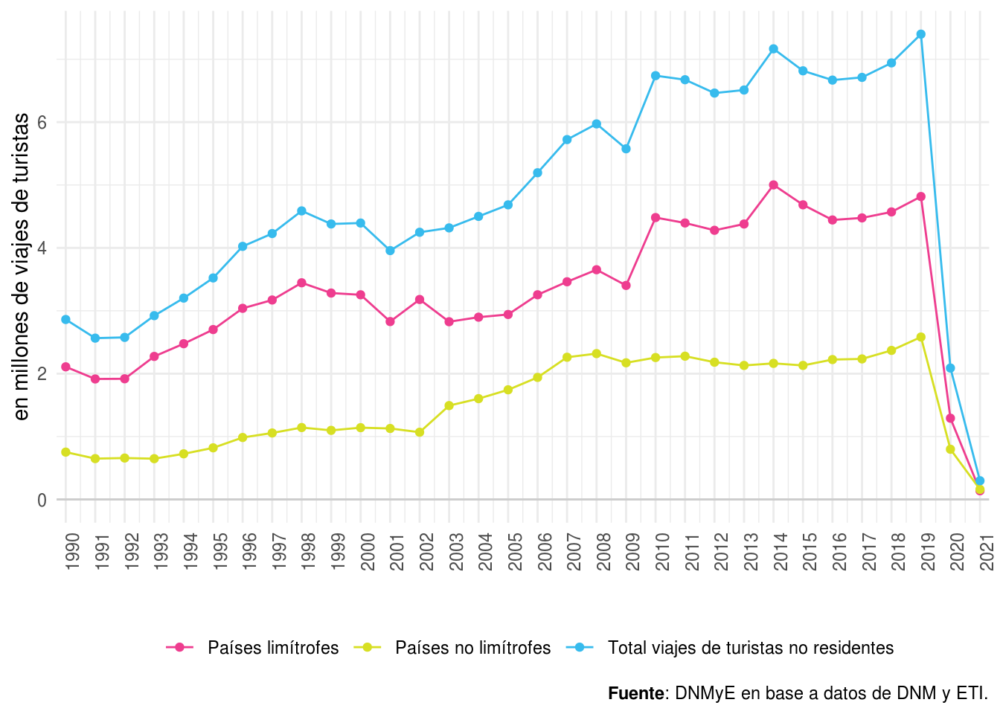Figura 2.2: Viajes de turistas no residentes por lugar de residencia. Distribución porcentual. Año 2021.
Europa fue el principal mercado emisor de turismo hacia Argentina, con 73.120 turistas (24,6%), seguido por EE.UU. y Canadá y Brasil con 45.447 y 45.110 y con un 15,3% y 15,2% respectivamente.
Como se observa en el siguiente gráfico, en el año 2021, hubo una caída significativa en los viajes de los turistas no residentes desde todos los países.
Figura 2.3: Viajes de turistas no residentes por lugar de residencia por año. Total país. Años 2020-2021.
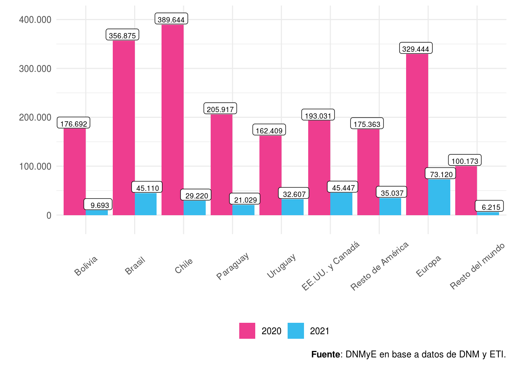La evolución mensual del año 2021 está marcada por los cambios implementados en las medidas de apertura y cierre de fronteras debido a la pandemia. Durante el primer trimestre del año tenían permitido el ingreso los residentes y los no residentes con familiares directos argentinos o residentes argentinos, siendo mayormente turistas de Europa, EE.UU y Canadá y Resto de América.
El primer trimestre registra una caída de más del 90% en todos los países respecto al 2020, debido a que la pandemia comenzó en marzo de ese año, e incluso aún en dicho mes se contabilizaron varias salidas de no residentes para regresar a su país.
En el segundo trimestre del 2021 las restricciones se hicieron mayores y no se pueden calcular variaciones interanuales debido a que en el mismo trimestre de 2020 el turismo se estimó en cero, por el cierre de fronteras3.
Recién en octubre de 2021 se abrieron gradualmente las fronteras: inicialmente a los residentes de países limítrofes y en noviembre a todos los no residentes. Las variaciones interanuales son bastante altas debido a la muy incipiente apertura del año anterior.
En comparación con el año 2019, las variaciones rondan el -95%, comenzando muy gradualmente a achicarse las diferencias desde octubre.
| Mes | Total | Variación interanual (%) | Variación vs. 2019 (%) | Bolivia | Variación interanual (%) | Brasil | Variación interanual (%) | Chile | Variación interanual (%) | EE.UU. y Canadá | Variación interanual (%) | Europa | Variación interanual (%) | Paraguay | Variación interanual (%) | Resto de América | Variación interanual (%) | Resto del mundo | Variación interanual (%) | Uruguay | Variación interanual (%) |
|---|---|---|---|---|---|---|---|---|---|---|---|---|---|---|---|---|---|---|---|---|---|
| Total | 297.478 | −85,8% | −96,0% | 9.693 | −94,5% | 45.110 | −87,4% | 29.220 | −92,5% | 45.447 | −76,5% | 73.120 | −77,8% | 21.029 | −89,8% | 35.037 | −80,0% | 6.215 | −93,8% | 32.607 | −79,9% |
| Enero | 22.795 | −97,5% | −97,4% | 865 | −98,9% | 2.104 | −98,9% | 2.281 | −98,2% | 3.619 | −95,8% | 8.722 | −94,0% | 936 | −99,0% | 3.578 | −95,2% | 270 | −99,4% | 420 | −99,3% |
| Febrero | 12.665 | −98,5% | −98,3% | 315 | −99,5% | 875 | −99,2% | 1.420 | −99,3% | 1.714 | −97,7% | 4.881 | −96,2% | 477 | −99,4% | 1.882 | −96,6% | 222 | −99,5% | 880 | −98,7% |
| Marzo | 14.281 | −95,7% | −97,8% | 300 | −99,2% | 1.118 | −98,0% | 1.374 | −97,0% | 2.223 | −92,3% | 5.355 | −89,4% | 518 | −98,5% | 2.448 | −93,3% | 291 | −97,7% | 655 | −97,7% |
| Abril | 10.753 | /// | −98,2% | 170 | /// | 769 | /// | 296 | /// | 2.151 | /// | 4.555 | /// | 292 | /// | 1.584 | /// | 308 | /// | 629 | /// |
| Mayo | 7.551 | /// | −98,4% | 289 | /// | 781 | /// | 320 | /// | 1.039 | /// | 2.585 | /// | 382 | /// | 1.325 | /// | 199 | /// | 631 | /// |
| Junio | 6.123 | /// | −98,6% | 109 | /// | 337 | /// | 196 | /// | 1.078 | /// | 2.613 | /// | 242 | /// | 810 | /// | 196 | /// | 543 | /// |
| Julio | 4.847 | 276,3% | −99,2% | 74 | 244,9% | 445 | 227,9% | 161 | 85,7% | 860 | 524,5% | 1.544 | 225,7% | 201 | 218,2% | 667 | 203,4% | 178 | 230,0% | 718 | 650,4% |
| Agosto | 4.317 | 27,9% | −99,1% | 56 | −83,6% | 310 | −12,4% | 145 | 97,1% | 803 | 374,3% | 1.396 | 103,0% | 159 | −81,8% | 657 | 29,2% | 173 | 27,1% | 618 | 169,9% |
| Septiembre | 4.752 | 10,1% | −99,2% | 119 | −83,3% | 296 | −17,9% | 200 | 5,9% | 616 | 138,3% | 1.690 | 82,7% | 207 | −70,3% | 622 | −4,0% | 161 | −39,1% | 841 | 221,0% |
| Octubre | 20.817 | 314,7% | −96,2% | 802 | 27,9% | 3.081 | 435,8% | 2.240 | 658,6% | 2.349 | 408,5% | 4.892 | 498,9% | 1.022 | 83,2% | 1.764 | 49,1% | 448 | 147,5% | 4.219 | 1.210,1% |
| Noviembre | 73.531 | 654,8% | −88,1% | 2.329 | 285,8% | 15.238 | 715,7% | 9.751 | 749,2% | 9.837 | 1.554,7% | 13.488 | 1.073,5% | 5.157 | 261,0% | 7.430 | 264,5% | 1.267 | 514,6% | 9.034 | 1.181,7% |
| Diciembre | 115.046 | 511,5% | −85,9% | 4.266 | 215,7% | 19.758 | 468,5% | 10.836 | 283,6% | 19.159 | 1.417,0% | 21.399 | 674,9% | 11.436 | 460,8% | 12.270 | 243,9% | 2.502 | 618,7% | 13.420 | 1.036,2% |
| Fuente: DNMyE en base a datos de DNM y ETI. | |||||||||||||||||||||
Las limitaciones para el ingreso y egreso de no residentes por pasos terrestres y fluviales durante los primeros nueve meses del año hicieron que el medio de transporte aéreo fuera el mayoritario incluso para países limítrofes, a excepción de Uruguay y Paraguay.
Las variaciones respecto a 2019 tienen una caída mayor a 90 % en todas las vías y países, excepto en los viajes de los turistas de Europa, EE.UU. y Canadá por vía aérea, cuyos viajes tienen variaciones cercanas al -88%.
| País de residencia | Total | Variación vs. 2019 (%) | Aéreo | Fluvial/marítimo | Terrestre | |||||||||
|---|---|---|---|---|---|---|---|---|---|---|---|---|---|---|
| Turistas | Variación interanual (%) | Variación vs. 2019 (%) | Participación en el total (%) | Turistas | Variación interanual (%) | Variación vs. 2019 (%) | Participación en el total (%) | Turistas | Variación interanual (%) | Variación vs. 2019 (%) | Participación en el total (%) | |||
| Total | 297.478 | −96,0% | 211.141 | −69,6% | −93,1% | 71,0% | 28.345 | −92,0% | −97,4% | 9,5% | 57.992 | −94,4% | −98,2% | 19,5% |
| Bolivia | 9.693 | −98,2% | 6.129 | −69,7% | −91,2% | 63,2% | 164 | −99,2% | −99,8% | 1,7% | 3.400 | −97,5% | −99,1% | 35,1% |
| Brasil | 45.110 | −96,9% | 24.111 | −83,8% | −97,2% | 53,4% | 2.007 | −97,7% | −99,0% | 4,4% | 18.992 | −84,1% | −95,6% | 42,1% |
| Chile | 29.220 | −97,4% | 23.808 | −65,1% | −93,5% | 81,5% | 303 | −95,4% | −98,0% | 1,0% | 5.109 | −98,4% | −99,3% | 17,5% |
| EE.UU. y Canadá | 45.447 | −91,5% | 42.935 | −57,7% | −87,9% | 94,5% | 2.046 | −96,8% | −98,1% | 4,5% | 466 | −98,3% | −99,3% | 1,0% |
| Europa | 73.120 | −92,9% | 69.311 | −59,7% | −88,5% | 94,8% | 2.150 | −96,4% | −98,3% | 2,9% | 1.659 | −98,3% | −99,5% | 2,3% |
| Paraguay | 21.029 | −97,5% | 4.311 | −73,8% | −95,2% | 20,5% | 151 | −99,3% | −99,8% | 0,7% | 16.567 | −90,0% | −97,6% | 78,8% |
| Resto de América | 35.037 | −95,0% | 32.398 | −71,1% | −93,2% | 92,5% | 1.276 | −93,0% | −98,1% | 3,6% | 1.363 | −97,0% | −99,1% | 3,9% |
| Resto del mundo | 6.215 | −98,1% | 5.188 | −88,5% | −97,3% | 83,5% | 265 | −98,4% | −99,3% | 4,3% | 762 | −98,0% | −99,2% | 12,3% |
| Uruguay | 32.607 | −95,9% | 2.949 | −70,3% | −95,8% | 9,0% | 19.983 | −66,1% | −94,3% | 61,3% | 9.675 | −89,7% | −97,5% | 29,7% |
| Fuente: DNMyE en base a datos de DNM y ETI. | ||||||||||||||
En 2021, el gasto de los turistas no residentes tuvo una caída interanual de un 78,9%, pasando a ser de US$348,8 millones4.
El gasto de los excursionistas, por su parte, fue de US$5,1 millones, con una caída interanual de un 80,5%. El gasto en pasajes5 para 2021 fue de US$38,8 millones, 41,4% menos que el año anterior.
Entonces, los ingresos económicos totales por turismo receptivo (que incluye al gasto de los turistas no residentes, los excursionistas no residentes y el gasto en pasajes) en el año 2021 alcanzó los US$392,7 millones, implicando una caída de 77,5% respecto al año anterior.
En comparación con 2019, el gasto de los turistas no residentes cayó un 93%, en tanto el gasto total por turismo receptivo lo hizo en un 92,9%.
| Año | Gasto turístico total | Variación interanual (%) | Gasto de turistas no residentes | Variación interanual (%) | Gasto de excursionistas no residentes | Variación interanual (%) | Gasto en pasajes | Variación interanual (%) |
|---|---|---|---|---|---|---|---|---|
| 2011 | 7.230,9 | /// | 6.301,4 | /// | 302,9 | /// | 626,6 | /// |
| 2012 | 6.695,8 | −7,4% | 5.737,8 | −8,9% | 307,4 | 1,5% | 650,6 | 3,8% |
| 2013 | 6.127,9 | −8,5% | 5.165,4 | −10,0% | 288,0 | −6,3% | 674,4 | 3,7% |
| 2014 | 6.607,5 | 7,8% | 5.540,3 | 7,3% | 382,5 | 32,8% | 684,6 | 1,5% |
| 2015 | 6.150,9 | −6,9% | 5.256,8 | −5,1% | 379,8 | −0,7% | 514,3 | −24,9% |
| 2016 | 5.345,4 | −13,1% | 4.589,5 | −12,7% | 257,0 | −32,3% | 498,9 | −3,0% |
| 2017 | 5.686,0 | 6,4% | 4.979,0 | 8,5% | 247,0 | −3,9% | 459,9 | −7,8% |
| 2018 | 5.840,9 | 2,7% | 5.120,3 | 2,8% | 284,3 | 15,1% | 436,3 | −5,1% |
| 2019 | 5.542,6 | −5,1% | 4.995,8 | −2,4% | 134,0 | −52,9% | 412,8 | −5,4% |
| 2020 | 1.746,6 | −68,5% | 1.654,2 | −66,9% | 26,3 | −80,4% | 66,2 | −84,0% |
| 2021 | 392,7 | −77,5% | 348,8 | −78,9% | 5,1 | −80,5% | 38,8 | −41,4% |
| Fuente: DNMyE en base a datos de INDEC. | ||||||||
El siguiente gráfico, muestra un ascenso del gasto turístico hasta 1998, donde comienza un incipiente descenso, hasta la abrupta caída en 2002. Al año siguiente presenta una línea de ascenso hasta 2011, solo interrumpida por la caída del año 2009.
Desde el año 2003, el gasto turístico estuvo mayormente explicado por el de los turistas extranjeros residentes en países no limítrofes, ya que éste representaba más del 50% del gasto total en todos los años, diferenciándose de la década del noventa, donde tenían una participación un poco menor a los residentes en países limítrofes. Esta preponderancia siempre prevaleció, aunque fue menor entre 2012 y 2015, y muy escasa en 2014.
Figura 2.4: Gasto de turistas no residentes según lugar de residencia por año. Total país. Años 1990-2021.
El descenso del gasto turístico del año 2021, se observa en todos los países. Los turistas de Europa fueron los que tuvieron un gasto mayor (US$102,2 millones), seguidos de EE.UU. y Canadá con un gasto de US$62,1 millones y Resto de América, con US$52,2 millones.
Figura 2.5: Gasto en US$ de turistas no residentes por lugar de residencia. Distribución porcentual. Año 2021.
| País de residencia | Gasto Total | Variación interanual (%) | Variación vs. 2019 (%) |
|---|---|---|---|
| Bolivia | 8,7 | −93,1% | −96,1% |
| Brasil | 43,0 | −83,7% | −94,9% |
| Chile | 25,8 | −82,1% | −93,9% |
| EE.UU. y Canadá | 62,1 | −62,5% | −90,1% |
| Europa | 102,2 | −73,7% | −91,5% |
| Paraguay | 18,9 | −84,3% | −95,0% |
| Resto de América | 52,2 | −71,5% | −92,4% |
| Resto del mundo | 9,6 | −91,7% | −97,7% |
| Uruguay | 26,3 | −82,1% | −85,5% |
| Fuente: DNMyE en base a datos de INDEC. | |||
Durante el año 2021, el gasto promedio por viaje de turista fue de US$1.172,4 millones, con una variación interanual de 48,1% y de 73,6% respecto a 2019.
El gasto promedio por viaje de turista fue mayor en los residentes en Resto del mundo, Resto de América y Europa.
| Año | Total | Variación interanual (%) | Bolivia | Variación interanual (%) | Brasil | Variación interanual (%) | Chile | Variación interanual (%) | Paraguay | Variación interanual (%) | Uruguay | Variación interanual (%) | EE.UU. y Canadá | Variación interanual (%) | Resto de América | Variación interanual (%) | Europa | Variación interanual (%) | Resto del mundo | Variación interanual (%) |
|---|---|---|---|---|---|---|---|---|---|---|---|---|---|---|---|---|---|---|---|---|
| 2011 | 944,1 | /// | 524,5 | /// | 1.016,9 | /// | 529,0 | /// | 399,9 | /// | 273,2 | /// | 1.797,0 | /// | 1.316,5 | /// | 1.588,3 | /// | 1.709,2 | /// |
| 2012 | 887,9 | −6,0% | 493,3 | −6,0% | 987,8 | −2,9% | 556,0 | 5,1% | 372,9 | −6,7% | 254,2 | −7,0% | 1.580,2 | −12,1% | 1.278,0 | −2,9% | 1.441,5 | −9,2% | 1.644,3 | −3,8% |
| 2013 | 793,4 | −10,6% | 523,2 | 6,1% | 800,4 | −19,0% | 521,2 | −6,3% | 452,6 | 21,4% | 269,1 | 5,8% | 1.495,3 | −5,4% | 1.233,4 | −3,5% | 1.271,1 | −11,8% | 1.541,1 | −6,3% |
| 2014 | 773,2 | −2,5% | 599,4 | 14,6% | 791,8 | −1,1% | 519,4 | −0,4% | 554,5 | 22,5% | 280,1 | 4,1% | 1.516,0 | 1,4% | 1.184,7 | −3,9% | 1.151,3 | −9,4% | 1.715,8 | 11,3% |
| 2015 | 771,3 | −0,3% | 567,9 | −5,3% | 704,1 | −11,1% | 491,4 | −5,4% | 562,8 | 1,5% | 285,6 | 2,0% | 1.431,6 | −5,6% | 1.173,1 | −1,0% | 1.211,9 | 5,3% | 1.733,5 | 1,0% |
| 2016 | 688,3 | −10,8% | 412,0 | −27,4% | 590,4 | −16,1% | 405,0 | −17,6% | 456,1 | −68,1% | 241,6 | −86,1% | 1.205,3 | 114,1% | 1.133,6 | −3,4% | 1.191,1 | 317,1% | 1.304,5 | 7,6% |
| 2017 | 741,9 | 7,8% | 421,6 | 2,3% | 640,6 | 8,5% | 402,5 | −0,6% | 482,9 | 5,9% | 256,1 | 6,0% | 1.380,9 | 14,6% | 1.271,0 | 12,1% | 1.291,3 | 8,4% | 1.242,4 | −4,8% |
| 2018 | 737,6 | −0,6% | 387,2 | −8,2% | 610,9 | −4,6% | 431,1 | 7,1% | 426,4 | −11,7% | 224,9 | −12,2% | 1.358,7 | −1,6% | 1.176,2 | −7,5% | 1.359,0 | 5,2% | 1.311,7 | 5,6% |
| 2019 | 675,2 | −8,5% | 408,1 | 5,4% | 567,2 | −7,1% | 373,2 | −13,4% | 442,9 | 3,9% | 226,8 | 0,8% | 1.180,7 | −13,1% | 994,9 | −15,4% | 1.168,1 | −14,1% | 1.315,8 | 0,3% |
| 2020 | 791,6 | 17,2% | 708,1 | 73,5% | 739,6 | 30,4% | 370,0 | −0,8% | 584,5 | 32,0% | 906,6 | 299,8% | 857,6 | −27,4% | 1.042,4 | 4,8% | 1.180,3 | 1,0% | 1.159,4 | −11,9% |
| 2021 | 1.172,4 | 48,1% | 894,1 | 26,3% | 952,5 | 28,8% | 883,4 | 138,7% | 899,2 | 53,9% | 807,8 | −10,9% | 1.366,7 | 59,4% | 1.489,4 | 42,9% | 1.397,3 | 18,4% | 1.544,4 | 33,2% |
| Fuente: DNMyE en base a datos de INDEC. | ||||||||||||||||||||
Esto se debe principalmente al aumento de la estadía del viaje, ya que el gasto promedio diario, disminuyó un 24,4% interanual y un 43,1% respecto a 2019.
En tanto, el gasto promedio diario fue mayor en los provenientes de EE.UU. y Canadá, seguidos de Brasil y Uruguay.
| Año | Total | Variación interanual (%) | Bolivia | Variación interanual (%) | Brasil | Variación interanual (%) | Chile | Variación interanual (%) | Paraguay | Variación interanual (%) | Uruguay | Variación interanual (%) | EE.UU. y Canadá | Variación interanual (%) | Resto de América | Variación interanual (%) | Europa | Variación interanual (%) | Resto del mundo | Variación interanual (%) |
|---|---|---|---|---|---|---|---|---|---|---|---|---|---|---|---|---|---|---|---|---|
| 2011 | 95,6 | /// | 54,0 | /// | 188,7 | /// | 87,1 | /// | 32,8 | /// | 71,5 | /// | 114,2 | /// | 91,0 | /// | 91,3 | /// | 121,4 | /// |
| 2012 | 87,3 | −8,7% | 51,9 | −3,9% | 173,8 | −7,9% | 86,2 | −1,0% | 31,3 | −4,5% | 70,0 | −2,1% | 107,2 | −6,2% | 76,5 | −15,8% | 77,4 | −15,2% | 147,5 | 21,5% |
| 2013 | 86,7 | −0,6% | 46,6 | −10,2% | 151,0 | −13,1% | 86,8 | 0,6% | 51,3 | 63,9% | 88,6 | 26,5% | 108,2 | 1,0% | 81,9 | 7,0% | 74,3 | −4,0% | 125,5 | −14,9% |
| 2014 | 85,0 | −2,0% | 55,7 | 19,4% | 145,7 | −3,5% | 88,2 | 1,6% | 48,2 | −6,1% | 84,8 | −4,3% | 100,8 | −6,9% | 88,6 | 8,2% | 72,0 | −3,1% | 118,6 | −5,5% |
| 2015 | 81,1 | −4,5% | 56,7 | 1,8% | 124,9 | −14,3% | 84,8 | −3,8% | 46,1 | −4,4% | 78,9 | −7,0% | 113,8 | 12,9% | 75,2 | −15,2% | 75,3 | 4,5% | 135,8 | 14,5% |
| 2016 | 66,0 | −18,7% | 36,7 | −35,2% | 104,9 | −16,0% | 67,0 | −21,0% | 32,6 | −29,3% | 64,3 | −18,5% | 94,5 | −17,0% | 66,7 | −11,3% | 69,4 | −7,8% | 111,0 | −18,3% |
| 2017 | 71,8 | 8,8% | 37,0 | 0,7% | 113,8 | 8,5% | 67,5 | 0,7% | 34,8 | 6,8% | 69,5 | 8,0% | 105,5 | 11,7% | 77,0 | 15,5% | 78,8 | 13,6% | 95,0 | −14,4% |
| 2018 | 67,3 | −6,2% | 33,0 | −10,8% | 93,0 | −18,3% | 65,9 | −2,4% | 28,5 | −18,0% | 57,8 | −16,7% | 103,8 | −1,7% | 65,7 | −14,7% | 81,0 | 2,7% | 99,5 | 4,7% |
| 2019 | 64,5 | −4,2% | 35,5 | 7,6% | 90,7 | −2,4% | 58,5 | −11,2% | 30,1 | 5,5% | 58,1 | 0,5% | 97,0 | −6,6% | 61,2 | −6,9% | 72,6 | −10,3% | 92,5 | −7,1% |
| 2020 | 48,5 | −24,7% | 33,6 | −5,3% | 59,1 | −34,9% | 45,4 | −22,3% | 26,2 | −12,9% | 67,8 | 16,6% | 70,1 | −27,7% | 36,7 | −40,0% | 56,9 | −21,6% | 65,4 | −29,3% |
| 2021 | 36,7 | −24,4% | 26,3 | −21,9% | 41,2 | −30,2% | 37,9 | −16,6% | 28,8 | 10,0% | 41,1 | −39,4% | 48,7 | −30,5% | 31,4 | −14,4% | 35,1 | −38,3% | 30,9 | −52,7% |
| Fuente: DNMyE en base a datos de INDEC. | ||||||||||||||||||||
La estadía promedio de los viajes de turistas no residentes en el año 2021 fue de 32,0 días, con una variación interanual de 95,9% y de 205,2% respecto a la estadía de 2019, la cual venía en línea con la tendencia histórica. Este incremento ya se observa en el año 2020, que tuvo una estadía de 16,3 días.
Se considera que las razones principales de este aumento se deben a que las medidas establecidas en función de la pandemia tuvieron como consecuencia un cambio en el perfil del turista no residente. Debido a que durante casi todo el año, los no residentes que tenían permitido el ingreso eran los de nacionalidad argentina o los que tenían familiares directos en el país, el turismo receptivo fue principalmente con motivo de visitas a familiares, con alojamiento en casa de los mismos -como veremos en el apartado de la ETI- y con estadías más prolongadas que otros perfiles de turistas. Por tanto, también tienen un gasto promedio diario menor, tal como presentamos en el cuadro anterior.
Asimismo, las transformaciones a nivel mundial iniciadas o profundizadas fuertemente en la pandemia, respecto tanto al mercado laboral -con el incremento del teletrabajo- y al mundo académico generaron la posibilidad de que muchas personas puedan trabajar y/o estudiar por estancias prolongadas fuera de su lugar de residencia habitual.
Los residentes de Resto del mundo, Resto de América y Europa han sido los que han tenido estadías más prolongadas en el país y, tal como vimos, los que han tenido un gasto por viaje mayor.
| Año | Total | Bolivia | Brasil | Chile | Paraguay | Uruguay | EE.UU. y Canadá | Resto de América | Europa | Resto del mundo |
|---|---|---|---|---|---|---|---|---|---|---|
| 2011 | 9,9 | 9,7 | 5,4 | 6,1 | 12,2 | 3,8 | 15,7 | 14,5 | 17,4 | 14,1 |
| 2012 | 10,2 | 9,5 | 5,7 | 6,4 | 11,9 | 3,6 | 14,7 | 16,7 | 18,6 | 11,1 |
| 2013 | 9,2 | 11,2 | 5,3 | 6,0 | 8,8 | 3,0 | 13,8 | 15,1 | 17,1 | 12,3 |
| 2014 | 9,1 | 10,8 | 5,4 | 5,9 | 11,5 | 3,3 | 15,0 | 13,4 | 16,0 | 14,5 |
| 2015 | 9,5 | 10,0 | 5,6 | 5,8 | 12,2 | 3,6 | 12,6 | 15,6 | 16,1 | 12,8 |
| 2016 | 10,4 | 11,2 | 5,6 | 6,0 | 14,0 | 3,8 | 12,8 | 17,0 | 17,2 | 11,8 |
| 2017 | 10,3 | 11,4 | 5,6 | 6,0 | 13,9 | 3,7 | 13,1 | 16,5 | 16,4 | 13,1 |
| 2018 | 11,0 | 11,7 | 6,6 | 6,5 | 15,0 | 3,9 | 13,1 | 17,9 | 16,8 | 13,2 |
| 2019 | 10,5 | 11,5 | 6,3 | 6,4 | 14,7 | 3,9 | 12,2 | 16,3 | 16,1 | 14,2 |
| 2020 | 16,3 | 21,1 | 12,5 | 8,1 | 22,3 | 13,4 | 12,2 | 28,4 | 20,7 | 17,7 |
| 2021 | 32,0 | 34,1 | 23,1 | 23,3 | 31,2 | 19,7 | 28,1 | 47,4 | 39,8 | 50,0 |
| Fuente: DNMyE en base a datos de INDEC. | ||||||||||
2.2.2 Turismo Emisivo
El total de viajes de turistas residentes en 2021 fue de 832.739, con una caída interanual de un 70,7%. En comparación con 2019, cayó un 90,9%.
| Año | Visitantes residentes | Variación interanual (%) | Turistas residentes | Variación interanual (%) | Excursionistas residentes | Variación interanual (%) |
|---|---|---|---|---|---|---|
| 2011 | 9.335.013 | /// | 5.970.636 | /// | 3.364.377 | /// |
| 2012 | 10.004.111 | 7,2% | 6.493.359 | 8,8% | 3.510.752 | 4,4% |
| 2013 | 10.095.133 | 0,9% | 6.727.790 | 3,6% | 3.367.343 | −4,1% |
| 2014 | 10.555.076 | 4,6% | 6.523.754 | −3,0% | 4.031.322 | 19,7% |
| 2015 | 13.972.500 | 32,4% | 7.803.928 | 19,6% | 6.168.572 | 53,0% |
| 2016 | 18.644.929 | 33,4% | 10.416.931 | 33,5% | 8.227.998 | 33,4% |
| 2017 | 21.582.600 | 15,8% | 12.213.018 | 17,2% | 9.369.583 | 13,9% |
| 2018 | 18.410.936 | −14,7% | 11.130.183 | −8,9% | 7.280.753 | −22,3% |
| 2019 | 15.351.341 | −16,6% | 9.113.564 | −18,1% | 6.237.777 | −14,3% |
| 2020 | 4.087.301 | −73,4% | 2.841.123 | −68,8% | 1.246.179 | −80,0% |
| 2021 | 1.074.116 | −73,7% | 832.739 | −70,7% | 241.377 | −80,6% |
| Fuente: DNMyE en base a datos de DNM y ETI. | ||||||
La serie de viajes de turistas residentes muestra una línea general ascendente, con una caída en el año 2002 y un crecimiento sostenido desde entonces, y principalmente entre 2014 y 2017, cuando llegó a 12,2 millones de viajes de turistas, descendiendo desde entonces. Los países limítrofes son los destinos mayoritarios en toda la serie, a excepción del año 2021.
Figura 2.6: Viajes de turistas residentes por país de destino principal por año. Total país. Años 1990-2021.
En el año 2021, EE.UU. y Canadá fue el destino principal del turismo emisivo, con
238.628 turistas,
(28,7%) seguido por Resto de América y Uruguay, con 144.943 y 124.553, con
17,4% y
15,0% respectivamente.
Figura 2.7: Viajes de turistas residentes por país de destino principal. Distribución porcentual. Año 2021.
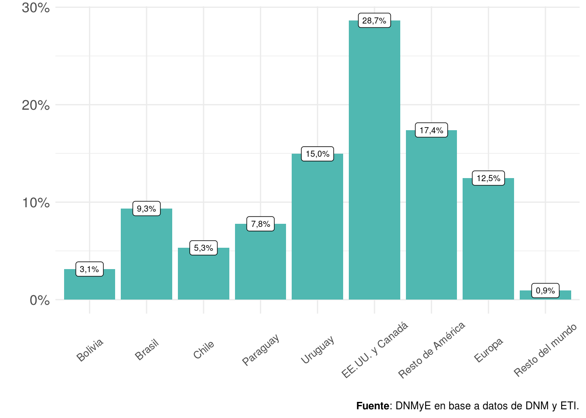El turismo emisivo hacia todos los países, a excepción de EE.UU. y Canadá, que aumentó, presenta una caída significativa en el año 2021.
Figura 2.8: Viajes de turistas residentes por país de destino principal por año. Total país. Años 2020-2021.
Al igual que lo que sucede con el turismo receptivo, los viajes de turistas residentes al exterior van descendiendo hasta el mes de julio debido a las restricciones, comenzando a aumentar sostenidamente desde entonces, siendo ya en noviembre 74% menor a 2019.
En los últimos meses del año crece sobre todo el turismo hacia países limítrofes, invirtiendo la preponderancia que habían tenido en meses anteriores los no limítrofes.
| Mes | Total | Variación interanual (%) | Variación vs. 2019 (%) | Bolivia | Variación interanual (%) | Brasil | Variación interanual (%) | Chile | Variación interanual (%) | EE.UU. y Canadá | Variación interanual (%) | Europa | Variación interanual (%) | Paraguay | Variación interanual (%) | Resto de América | Variación interanual (%) | Resto del mundo | Variación interanual (%) | Uruguay | Variación interanual (%) |
|---|---|---|---|---|---|---|---|---|---|---|---|---|---|---|---|---|---|---|---|---|---|
| Total | 832.739 | −70,7% | −90,9% | 26.114 | −78,9% | 77.844 | −91,0% | 44.242 | −88,0% | 238.628 | 50,7% | 103.848 | −27,0% | 64.785 | −80,4% | 144.943 | −26,8% | 7.781 | −80,5% | 124.553 | −79,8% |
| Enero | 64.491 | −94,5% | −95,1% | 1.578 | −96,7% | 11.880 | −96,6% | 6.488 | −95,7% | 15.549 | −67,2% | 4.481 | −89,6% | 2.370 | −98,6% | 17.529 | −75,8% | 1.420 | −89,9% | 3.196 | −98,9% |
| Febrero | 63.916 | −94,7% | −94,7% | 3.054 | −93,5% | 8.654 | −97,7% | 5.780 | −96,5% | 14.672 | −75,7% | 4.239 | −91,6% | 2.994 | −97,6% | 19.421 | −75,3% | 649 | −96,4% | 4.453 | −98,4% |
| Marzo | 59.648 | −82,0% | −93,6% | 2.821 | −87,0% | 7.691 | −93,3% | 4.418 | −88,4% | 10.186 | −50,2% | 3.521 | −83,6% | 4.971 | −85,0% | 20.166 | −31,9% | 564 | −92,1% | 5.310 | −87,9% |
| Abril | 31.100 | /// | −95,6% | 1.807 | /// | 1.394 | /// | 1.433 | /// | 11.337 | /// | 3.062 | /// | 2.089 | /// | 7.141 | /// | 164 | /// | 2.673 | /// |
| Mayo | 33.169 | /// | −94,4% | 1.507 | /// | 1.311 | /// | 1.422 | /// | 14.891 | /// | 2.966 | /// | 1.570 | /// | 6.264 | /// | 91 | /// | 3.147 | /// |
| Junio | 41.197 | /// | −93,1% | 1.890 | /// | 808 | /// | 1.148 | /// | 21.162 | /// | 4.626 | /// | 1.468 | /// | 5.837 | /// | 97 | /// | 4.161 | /// |
| Julio | 29.738 | 446,8% | −96,0% | 833 | 239,0% | 556 | −8,2% | 343 | −16,0% | 14.939 | 2.235,9% | 4.322 | 250,0% | 1.403 | 100,1% | 2.816 | 252,3% | 4 | /// | 4.522 | 461,7% |
| Agosto | 46.069 | 672,7% | −92,9% | 1.397 | 695,4% | 1.029 | 25,7% | 1.353 | 287,3% | 19.402 | 2.243,4% | 11.461 | 658,0% | 1.164 | 77,0% | 4.595 | 1.276,4% | 46 | −61,1% | 5.622 | 381,0% |
| Septiembre | 54.197 | 390,8% | −90,9% | 1.707 | 154,5% | 1.395 | 19,0% | 1.755 | 237,5% | 23.085 | 1.145,7% | 14.371 | 295,1% | 1.083 | 99,1% | 5.249 | 441,1% | 14 | −89,7% | 5.538 | 260,0% |
| Octubre | 85.664 | 363,0% | −86,0% | 1.724 | 22,5% | 6.459 | 251,2% | 2.816 | 154,7% | 33.341 | 601,0% | 18.638 | 334,2% | 4.312 | 909,9% | 7.220 | 263,2% | 1.076 | 1.821,5% | 10.077 | 283,4% |
| Noviembre | 149.132 | 344,6% | −74,2% | 2.883 | 48,9% | 12.886 | 172,7% | 5.702 | 71,6% | 36.574 | 308,3% | 18.300 | 224,8% | 16.828 | 1.526,3% | 21.548 | 417,3% | 1.584 | 2.525,5% | 32.828 | 785,2% |
| Diciembre | 174.418 | 177,6% | −71,2% | 4.914 | 60,9% | 23.781 | 274,2% | 11.584 | 21,1% | 23.491 | 81,7% | 13.861 | 24,6% | 24.532 | 401,9% | 27.159 | 196,8% | 2.071 | 1.201,8% | 43.025 | 667,4% |
| Fuente: DNMyE en base a datos de DNM y ETI. | |||||||||||||||||||||
Al igual que con el turismo receptivo, las limitaciones para el ingreso y egreso por pasos terrestres y fluviales durante los primeros nueve meses del año hizo que el medio de transporte aéreo fuera el mayoritario incluso para el emisivo hacia países limítrofes, a excepción de Uruguay y Paraguay, donde prevalecen la vía fluvial y terrestre respectivamente.
Los turistas de vía aérea con destino a EE.UU. y Canadá, Paraguay y Bolivia han sido los únicos grupos que tuvieron una variación positiva respecto a 2020.
La caída respecto a 2019 ha sido algo menor en la vía aérea: -83,8%.
| Destino principal | Total | Variación vs. 2019 (%) | Aéreo | Fluvial/marítimo | Terrestre | |||||||||
|---|---|---|---|---|---|---|---|---|---|---|---|---|---|---|
| Turistas | Variación interanual (%) | Variación vs. 2019 (%) | Participación en el total (%) | Turistas | Variación interanual (%) | Variación vs. 2019 (%) | Participación en el total (%) | Turistas | Variación interanual (%) | Variación vs. 2019 (%) | Participación en el total (%) | |||
| Total | 832.739 | −90,9% | 638.413 | −29,5% | −83,8% | 76,7% | 89.373 | −72,9% | −89,4% | 10,7% | 104.953 | −93,5% | −97,6% | 12,6% |
| Bolivia | 26.114 | −94,5% | 17.776 | 29,5% | −44,7% | 68,1% | 0 | −100,0% | −100,0% | 0,0% | 8.338 | −91,0% | −97,7% | 31,9% |
| Brasil | 77.844 | −96,4% | 53.715 | −79,4% | −94,1% | 69,0% | 15 | −100,0% | −100,0% | 0,0% | 24.114 | −95,8% | −97,9% | 31,0% |
| Chile | 44.242 | −96,4% | 34.690 | −32,5% | −86,6% | 78,4% | 42 | −98,6% | −99,0% | 0,1% | 9.510 | −97,0% | −99,0% | 21,5% |
| EE.UU. y Canadá | 238.628 | −70,0% | 238.628 | 51,5% | −69,9% | 100,0% | 0 | −100,0% | −100,0% | 0,0% | 0 | −100,0% | −100,0% | 0,0% |
| Europa | 103.848 | −86,2% | 103.847 | −26,5% | −86,1% | 100,0% | 1 | −99,8% | −99,9% | 0,0% | 0 | −100,0% | −100,0% | 0,0% |
| Paraguay | 64.785 | −94,8% | 24.880 | 51,1% | −58,6% | 38,4% | 76 | −99,8% | −99,9% | 0,1% | 39.829 | −86,0% | −96,3% | 61,5% |
| Resto de América | 144.943 | −83,5% | 144.943 | −25,6% | −83,2% | 100,0% | 0 | −100,0% | −100,0% | 0,0% | 0 | −100,0% | −100,0% | 0,0% |
| Resto del mundo | 7.781 | −96,0% | 7.781 | −80,5% | −96,0% | 100,0% | 0 | −100,0% | −100,0% | 0,0% | 0 | −100,0% | −100,0% | 0,0% |
| Uruguay | 124.553 | −90,9% | 12.152 | −59,5% | −86,6% | 9,8% | 89.239 | −63,3% | −84,0% | 71,6% | 23.162 | −93,3% | −96,8% | 18,6% |
| Fuente: DNMyE en base a datos de DNM y ETI. | ||||||||||||||
En 2021, el gasto de los turistas residentes tuvo una caída interanual de un 52,7%, pasando a ser de US$1.332,9 millones.
El gasto de los excursionistas, por su parte, fue de US$6,5 millones, con una caída interanual de un 83,6%. El gasto en pasajes para 2021 fue de US$527,9 millones, 30,1% menos que el año anterior.
Entonces, los egresos económicos totales por turismo emisivo (que incluye al gasto de los turistas y excursionistas residentes y el gasto en pasajes) en el año 2021 alcanzó los US$1.867,3 millones, implicando una caída de 42,8% respecto al año anterior.
En comparación con 2019, el gasto de los turistas residentes cayó un 82,2%, en tanto los egresos totales por turismo emisivo lo hizo en un 80,6
| Año | Gasto turístico total | Variación interanual (%) | Gasto de turistas residentes | Variación interanual (%) | Gasto de excursionistas residentes | Variación interanual (%) | Gasto en pasajes | Variación interanual (%) |
|---|---|---|---|---|---|---|---|---|
| 2011 | 8.479,6 | /// | 6.244,4 | /// | 300,3 | /// | 1.934,9 | /// |
| 2012 | 9.421,4 | 11,1% | 6.767,3 | 8,4% | 304,6 | 1,4% | 2.349,4 | 21,4% |
| 2013 | 9.279,6 | −1,5% | 6.503,0 | −3,9% | 288,0 | −5,4% | 2.488,6 | 5,9% |
| 2014 | 8.470,9 | −8,7% | 6.234,3 | −4,1% | 382,5 | 32,8% | 1.854,1 | −25,5% |
| 2015 | 9.537,7 | 12,6% | 6.792,0 | 8,9% | 379,8 | −0,7% | 2.365,9 | 27,6% |
| 2016 | 11.349,8 | 19,0% | 8.498,7 | 25,1% | 257,0 | −32,3% | 2.594,1 | 9,6% |
| 2017 | 12.996,5 | 14,5% | 9.947,8 | 17,1% | 247,0 | −3,9% | 2.801,7 | 8,0% |
| 2018 | 12.378,0 | −4,8% | 9.680,2 | −2,7% | 284,3 | 15,1% | 2.413,5 | −13,9% |
| 2019 | 9.631,9 | −22,2% | 7.502,4 | −22,5% | 134,0 | −52,9% | 1.995,5 | −17,3% |
| 2020 | 3.262,0 | −66,1% | 2.816,7 | −62,5% | 39,5 | −70,5% | 405,8 | −79,7% |
| 2021 | 1.867,3 | −42,8% | 1.332,9 | −52,7% | 6,5 | −83,6% | 527,9 | 30,1% |
| Fuente: DNMyE en base a datos de INDEC. | ||||||||
Tal como se observa en el siguiente gráfico, el gasto en dólares de turistas residentes en sus viajes al exterior presenta un crecimiento sostenido en la década del noventa, descendiendo en 2001 y 2002 y volviendo a aumentar entre 2003 y 2017. A partir de entonces, comienza a descender.
El gasto según destino limítrofe y no limítrofe, ha sido relativamente parejo desde 1990, excepto en 2011 y 2013, donde es más alto en los primeros. En cambio, en 2018 y 2019 la diferencia se agranda en favor de los destinos no limítrofes. En 2020, el gasto en países limítrofes ha sido un poco mayor. Sin embargo, ante la caída del gasto en estos países en 2021, nuevamente el gasto en países no limítrofes vuelve a ser el más importante.
Figura 2.9: Gasto de turistas residentes según lugar de destino por año. Total país. Años 1990-2021.
En el año 2021, los turistas con destino EE.UU. y Canadá fueron los que tuvieron un gasto mayor (US$433,9 millones), seguidos de los que viajaron hacia Resto de América y Europa.
El descenso del gasto turístico emisivo del año 2021, se observa en todos los países, con la sola excepción de EE.UU. y Canadá.
Figura 2.10: Gasto en US$ de turistas residentes por lugar de destino. Distribución porcentual. Año 2021.
El gasto promedio por viaje de turista fue de US$1.600,6. Al igual que lo analizado en turismo receptivo, se observa un fuerte aumento, siendo 61,4% mayor que en 2020 y 94,4% más alto que 2019. Este aumento se observa en 2020 en todos los países y en 2021 en casi todos, con la excepción de Bolivia, Paraguay, EE.UU. y Canadá.
El gasto promedio por viaje de turista fue mayor en los turistas residentes que viajaron a Resto del mundo, Resto de América y EE.UU. y Canadá.
| Año | Total | Variación interanual (%) | Bolivia | Variación interanual (%) | Brasil | Variación interanual (%) | Chile | Variación interanual (%) | Paraguay | Variación interanual (%) | Uruguay | Variación interanual (%) | EE.UU. y Canadá | Variación interanual (%) | Resto de América | Variación interanual (%) | Europa | Variación interanual (%) | Resto del mundo | Variación interanual (%) |
|---|---|---|---|---|---|---|---|---|---|---|---|---|---|---|---|---|---|---|---|---|
| 2011 | 1.045,9 | /// | 932,1 | /// | 1.069,8 | /// | 721,7 | /// | 411,1 | /// | 715,1 | /// | 1.799,0 | /// | 1.519,2 | /// | 2.504,5 | /// | 3.058,6 | /// |
| 2012 | 1.042,2 | −0,4% | 922,4 | −1,0% | 1.046,3 | −2,2% | 749,0 | 3,8% | 416,3 | 1,3% | 761,2 | 6,4% | 1.875,6 | 4,3% | 1.506,6 | −0,8% | 2.190,5 | −12,5% | 2.822,3 | −7,7% |
| 2013 | 966,6 | −7,3% | 812,3 | −11,9% | 948,5 | −9,3% | 584,5 | −22,0% | 429,9 | 3,3% | 696,9 | −8,4% | 1.577,8 | −15,9% | 1.486,0 | −1,4% | 2.078,6 | −5,1% | 2.737,4 | −3,0% |
| 2014 | 955,6 | −1,1% | 1.037,0 | 27,7% | 936,5 | −1,3% | 615,8 | 5,4% | 524,5 | 22,0% | 439,2 | −37,0% | 1.684,8 | 6,8% | 1.513,6 | 1,9% | 1.934,8 | −6,9% | 2.952,0 | 7,8% |
| 2015 | 870,3 | −8,9% | 811,7 | −21,7% | 836,9 | −10,6% | 557,3 | −9,5% | 375,7 | −28,4% | 405,5 | −7,7% | 1.541,2 | −8,5% | 1.599,9 | 5,7% | 1.954,1 | 1,0% | 2.643,7 | −10,4% |
| 2016 | 815,9 | −6,3% | 447,1 | −44,9% | 685,2 | −18,1% | 578,8 | 3,9% | 404,8 | −73,7% | 404,9 | −84,7% | 1.598,6 | 325,5% | 1.462,8 | −8,6% | 1.936,2 | 377,5% | 2.338,2 | 19,7% |
| 2017 | 814,5 | −0,2% | 522,1 | 16,8% | 672,3 | −1,9% | 567,3 | −2,0% | 453,6 | 12,1% | 380,2 | −6,1% | 1.748,4 | 9,4% | 1.239,6 | −15,3% | 2.119,8 | 9,5% | 2.512,5 | 7,5% |
| 2018 | 869,7 | 6,8% | 418,4 | −19,9% | 656,5 | −2,4% | 462,7 | −18,4% | 479,2 | 5,6% | 416,9 | 9,7% | 1.820,3 | 4,1% | 1.316,6 | 6,2% | 2.352,8 | 11,0% | 2.713,1 | 8,0% |
| 2019 | 823,2 | −5,3% | 368,6 | −11,9% | 546,0 | −16,8% | 360,6 | −22,1% | 440,8 | −8,0% | 338,8 | −18,7% | 1.825,8 | 0,3% | 1.286,5 | −2,3% | 2.079,7 | −11,6% | 2.773,4 | 2,2% |
| 2020 | 991,4 | 20,4% | 1.002,5 | 172,0% | 723,8 | 32,6% | 544,7 | 51,1% | 690,6 | 56,7% | 750,0 | 121,4% | 2.320,8 | 27,1% | 1.859,0 | 44,5% | 2.302,6 | 10,7% | 2.843,4 | 2,5% |
| 2021 | 1.600,6 | 61,4% | 695,3 | −30,6% | 1.003,1 | 38,6% | 1.070,7 | 96,6% | 468,3 | −32,2% | 1.142,9 | 52,4% | 1.818,3 | −21,7% | 1.979,0 | 6,5% | 2.374,5 | 3,1% | 6.331,1 | 122,7% |
| Fuente: DNMyE en base a datos de INDEC. | ||||||||||||||||||||
Tal como sucedió con el turismo receptivo, esto se debe principalmente al aumento de la estadía del viaje, ya que el gasto promedio diario, si bien tuvo un aumento de un 8,2 % interanual, tuvo una caída de 26,8% respecto a 2019.
El gasto promedio diario fue mayor en los que tuvieron como destino principal Resto del mundo, Resto de América y EE.UU. y Canadá.
| Año | Total | Variación interanual (%) | Bolivia | Variación interanual (%) | Brasil | Variación interanual (%) | Chile | Variación interanual (%) | Paraguay | Variación interanual (%) | Uruguay | Variación interanual (%) | EE.UU. y Canadá | Variación interanual (%) | Resto de América | Variación interanual (%) | Europa | Variación interanual (%) | Resto del mundo | Variación interanual (%) |
|---|---|---|---|---|---|---|---|---|---|---|---|---|---|---|---|---|---|---|---|---|
| 2011 | 89,4 | /// | 72,3 | /// | 111,0 | /// | 68,2 | /// | 35,7 | /// | 114,5 | /// | 118,0 | /// | 102,2 | /// | 90,7 | /// | 97,8 | /// |
| 2012 | 90,3 | 1,0% | 66,3 | −8,3% | 106,8 | −3,7% | 72,7 | 6,7% | 35,9 | 0,6% | 118,9 | 3,9% | 116,3 | −1,5% | 101,6 | −0,7% | 85,6 | −5,6% | 117,8 | 20,5% |
| 2013 | 93,1 | 3,0% | 69,1 | 4,1% | 109,7 | 2,7% | 66,7 | −8,3% | 47,8 | 33,2% | 110,7 | −6,9% | 115,2 | −0,9% | 106,3 | 4,7% | 89,3 | 4,4% | 112,7 | −4,3% |
| 2014 | 91,8 | −1,4% | 92,3 | 33,7% | 107,1 | −2,5% | 70,6 | 5,8% | 58,4 | 22,1% | 69,9 | −36,9% | 120,5 | 4,6% | 104,0 | −2,1% | 90,2 | 0,9% | 121,2 | 7,5% |
| 2015 | 86,1 | −6,2% | 71,4 | −22,6% | 100,0 | −6,5% | 66,0 | −6,4% | 42,7 | −26,9% | 64,5 | −7,7% | 117,8 | −2,3% | 111,5 | 7,2% | 88,5 | −1,8% | 122,9 | 1,4% |
| 2016 | 79,8 | −7,3% | 37,4 | −47,6% | 81,7 | −18,4% | 73,3 | 10,9% | 45,3 | 6,3% | 66,4 | 2,9% | 114,7 | −2,6% | 105,4 | −5,4% | 87,7 | −0,9% | 92,7 | −24,5% |
| 2017 | 78,2 | −2,1% | 43,9 | 17,4% | 80,4 | −1,6% | 70,0 | −4,5% | 49,8 | 9,8% | 65,9 | −0,8% | 112,1 | −2,3% | 90,2 | −14,4% | 89,0 | 1,4% | 96,0 | 3,6% |
| 2018 | 78,8 | 0,9% | 35,8 | −18,5% | 76,5 | −4,8% | 63,3 | −9,5% | 50,3 | 1,0% | 68,3 | 3,7% | 116,8 | 4,2% | 87,3 | −3,3% | 89,7 | 0,9% | 104,2 | 8,5% |
| 2019 | 74,1 | −6,1% | 30,9 | −13,6% | 67,7 | −11,5% | 47,6 | −24,9% | 48,0 | −4,6% | 53,9 | −21,0% | 118,9 | 1,8% | 89,7 | 2,8% | 83,5 | −6,9% | 103,7 | −0,5% |
| 2020 | 50,1 | −32,3% | 26,9 | −13,1% | 48,2 | −28,8% | 36,4 | −23,5% | 35,1 | −26,8% | 52,6 | −2,4% | 83,6 | −29,7% | 67,0 | −25,4% | 53,1 | −36,4% | 64,9 | −37,4% |
| 2021 | 54,2 | 8,2% | 32,5 | 21,0% | 31,0 | −35,7% | 31,4 | −13,7% | 25,4 | −27,8% | 51,4 | −2,3% | 67,7 | −19,1% | 69,5 | 3,8% | 50,6 | −4,8% | 80,9 | 24,8% |
| Fuente: DNMyE en base a datos de INDEC. | ||||||||||||||||||||
La estadía promedio de los viajes de turistas residentes en el año 2021 fue de 29,5 días; 49,2% mayor a la del año anterior y 165,5% mayor que la estadía de 2019, la cual venía en línea con la tendencia histórica. Este incremento ya se observa en el año 2020, que tuvo una estadía de 19,8 días.
Las estadías en Resto del mundo y Europa han sido las más prolongadas y, tal como vimos, los turistas en esos destinos han sido los que han tenido un gasto por viaje mayor. Los países más lejanos históricamente suelen presentar estadías más prolongadas, pero en 2021 fueron casi el doble o más que las de 2019.
Consideramos que estos cambios se deben al mismo fenómeno analizado respecto al turismo receptivo.
| Año | Total | Bolivia | Brasil | Chile | Paraguay | Uruguay | EE.UU. y Canadá | Resto de América | Europa | Resto del mundo |
|---|---|---|---|---|---|---|---|---|---|---|
| 2011 | 11,7 | 11,9 | 9,6 | 10,6 | 11,5 | 6,2 | 15,3 | 14,9 | 27,6 | 31,3 |
| 2012 | 11,5 | 12,9 | 9,8 | 10,3 | 11,6 | 6,4 | 16,1 | 14,8 | 25,6 | 24,0 |
| 2013 | 10,4 | 10,7 | 8,7 | 8,8 | 9,0 | 6,3 | 13,7 | 14,0 | 23,3 | 24,3 |
| 2014 | 10,3 | 9,9 | 8,8 | 8,7 | 9,0 | 6,3 | 14,0 | 14,6 | 21,5 | 24,4 |
| 2015 | 10,0 | 10,0 | 8,4 | 8,4 | 8,8 | 6,3 | 13,1 | 14,4 | 22,1 | 21,5 |
| 2016 | 10,2 | 11,9 | 8,4 | 7,9 | 8,9 | 6,1 | 13,9 | 13,9 | 22,1 | 25,2 |
| 2017 | 10,4 | 11,9 | 8,4 | 8,1 | 9,1 | 5,8 | 15,6 | 13,7 | 23,8 | 26,2 |
| 2018 | 11,0 | 11,7 | 8,6 | 7,3 | 9,5 | 6,1 | 15,6 | 15,1 | 26,2 | 26,0 |
| 2019 | 11,1 | 11,9 | 8,1 | 7,6 | 9,2 | 6,3 | 15,4 | 14,3 | 24,9 | 26,8 |
| 2020 | 19,8 | 37,3 | 15,0 | 15,0 | 19,7 | 14,2 | 27,7 | 27,8 | 43,3 | 43,8 |
| 2021 | 29,5 | 21,4 | 32,4 | 34,1 | 18,5 | 22,2 | 26,9 | 28,5 | 46,9 | 78,2 |
| Fuente: DNMyE en base a datos de INDEC. | ||||||||||
2.2.3 Balance de viajes de turistas y gasto
En el año 2021, el balance de viajes de turistas presentó un saldo negativo de -535.261 viajes. Este balance es negativo desde 2015, alcanzando su pico en 2017 y ascendiendo desde entonces. El año 2021, presenta el menor saldo deficitario de viajes de turistas de los últimos siete años.
Por otro lado, el balance de divisas correspondiente al turismo también tuvo un saldo negativo, de -US$984,1 millones. Este balance es negativo desde 2012, llegando a su punto más negativo en 2017 y ascendiendo desde entonces. El año 2021, presenta el balance de divisas de turismo más alto de los últimos siete años.
| Año | Total | Bolivia | Brasil | Chile | Paraguay | Uruguay | EE.UU. y Canadá | Resto de América | Europa | Resto del mundo | ||||||||||
|---|---|---|---|---|---|---|---|---|---|---|---|---|---|---|---|---|---|---|---|---|
| Viajes de turistas | Millones de US$ | Viajes de turistas | Millones de US$ | Viajes de turistas | Millones de US$ | Viajes de turistas | Millones de US$ | Viajes de turistas | Millones de US$ | Viajes de turistas | Millones de US$ | Viajes de turistas | Millones de US$ | Viajes de turistas | Millones de US$ | Viajes de turistas | Millones de US$ | Viajes de turistas | Millones de US$ | |
| 2011 | 703.539 | 56,9 | 69.528 | −54,3 | 305.357 | 250,7 | 132.349 | −123,4 | −79.828 | −41,3 | −561.503 | −742,7 | −25.614 | −47,0 | 45.558 | −55,5 | 686.290 | 835,4 | 131.401 | 35,1 |
| 2012 | −31.453 | −1.029,5 | 86.282 | −64,7 | 99.927 | 25,9 | −146.508 | −323,0 | −31.712 | −47,2 | −671.131 | −871,1 | −66.652 | −245,1 | −32.814 | −188,2 | 617.445 | 676,4 | 113.710 | 7,4 |
| 2013 | −217.357 | −1.337,6 | 116.513 | −5,3 | −172.207 | −340,0 | −145.602 | −153,6 | 10.766 | 23,7 | −422.441 | −687,8 | −157.448 | −279,4 | −88.691 | −291,3 | 535.707 | 414,3 | 106.045 | −18,3 |
| 2014 | 641.606 | −694,0 | 134.304 | −63,8 | −109.124 | −291,3 | 50.236 | −86,5 | 85.997 | 71,2 | −11.475 | −186,9 | −190.174 | −382,5 | −29.372 | −257,3 | 569.793 | 404,2 | 141.420 | 99,0 |
| 2015 | −988.167 | −1.535,2 | 105.669 | −39,9 | −581.263 | −640,4 | −327.071 | −264,6 | −62.581 | 144,3 | −359.847 | −249,4 | −210.912 | −367,4 | −207.639 | −581,6 | 527.220 | 365,2 | 128.258 | 98,6 |
| 2016 | −3.748.641 | −3.909,2 | 14.037 | −14,5 | −1.204.964 | −928,4 | −1.251.791 | −924,0 | −254.887 | −56,9 | −790.446 | −437,4 | −383.128 | −784,9 | −260.213 | −566,4 | 243.434 | −222,9 | 139.317 | 26,2 |
| 2017 | −5.501.690 | −4.968,7 | −72.809 | −93,5 | −1.335.561 | −937,3 | −1.752.573 | −1.163,9 | −630.277 | −258,2 | −1.092.177 | −503,3 | −439.385 | −931,7 | −422.410 | −505,1 | 168.815 | −395,2 | 74.687 | −180,6 |
| 2018 | −4.188.355 | −4.559,9 | 57.261 | 6,8 | −1.320.153 | −926,8 | −816.415 | −412,0 | −548.832 | −310,5 | −1.000.221 | −555,1 | −385.002 | −922,6 | −382.399 | −593,3 | 112.689 | −668,0 | 94.717 | −178,4 |
| 2019 | −1.714.514 | −2.506,6 | 72.535 | 48,5 | −684.453 | −342,5 | −84.298 | −16,0 | −405.264 | −176,8 | −574.781 | −284,2 | −262.376 | −823,1 | −185.505 | −441,0 | 281.987 | −354,4 | 127.641 | −116,9 |
| 2020 | −751.575 | −1.162,5 | 52.950 | 1,1 | −505.275 | −360,1 | 21.375 | −56,4 | −125.329 | −108,4 | −454.961 | −315,8 | 34.723 | −201,9 | −22.628 | −185,3 | 187.271 | 61,5 | 60.299 | 2,8 |
| 2021 | −535.261 | −984,1 | −16.421 | −9,5 | −32.734 | −35,1 | −15.022 | −21,6 | −43.756 | −11,4 | −91.946 | −116,0 | −193.181 | −371,8 | −109.907 | −234,7 | −30.728 | −144,4 | −1.566 | −39,7 |
| Fuente: DNMyE en base a datos de INDEC. | ||||||||||||||||||||
Al observar la serie desde 1990 se destaca que el balance de viajes de turistas presentaba valores positivos o valores negativos no menores de -500.000 hasta el año 2014. En tanto, el balance de divisas tuvo saldos positivos entre 2005 y 2011, con la excepción del año 2009.
En ambos casos se destaca el nivel de la pronunciada caída desde 2015 y los valores apenas por debajo de -500.000 viajes de turistas en 2021, en parte debido al menor flujo del turismo receptivo y emisivo.
Figura 2.11: Balance de viajes de turistas (en miles), y de divisas (en millones de dólares). Total país. Años 1990-2021.
2.3 Encuesta de Turismo Internacional (Aerop. de Ezeiza, Aerop. J. Newbery, Aerop. de Córdoba y Puerto de Bs. As.)
La Encuesta de Turismo Internacional es un relevamiento implementando de manera conjunta entre el MINTURDEP y el INDEC.
El principal objetivo de la ETI es medir y caracterizar a los viajes, los viajeros y los gastos, tanto de los no residentes en el país que visitan nuestro país, como de los residentes en la Argentina que visitan el exterior.
El operativo se realiza de manera continua desde el año 2004 y en la actualidad se relevan los siguientes pasos:
- Aeropuerto Internacional de Ezeiza y Aeroparque
- Aeropuerto Internacional de Córdoba
- Aeropuerto Internacional de Mendoza
- Puerto de Buenos Aires
- Paso Internacional Cristo Redentor
Históricamente, por estos pasos se produce el 50% del movimiento turístico internacional del país; mientras que el gasto de los turistas no residentes egresados por los mismos representa, aproximadamente, el 65% del gasto total en dólares generados por el turismo receptivo en la Argentina.
Se debe aclarar que durante el año 2021 solo se realizó el operativo en el primer y cuarto trimestre en el paso Ezeiza y Aeroparque; y en el cuarto trimestre en el resto de los pasos. Es por este motivo que solo se incluirán variaciones interanuales en la primera tabla de turismo receptivo y de turismo emisivo; en el resto de las tablas/gráficos no es posible la comparación contra el año anterior.
2.3.1 Turismo Receptivo
A continuación se presentarán datos relacionados al turismo receptivo en los pasos relevados por la ETI en el año 2021.
En el año 2021 se registraron 200.605 turistas en Ezeiza y Aeroparque (cayendo -67,9% en comparación con el año anterior); 1.405 turistas en el Aeropuerto de Córdoba (-91,5% vs 2020); 5.247 en el Aeropuerto de Mendoza (-77,3% i.a.); 19.289 en el Puerto de Buenos Aires (-47% i.a.) y 4.039 en el Paso Internacional Cristo Redentor (-95,7% i.a.).
| Año | Eze / Aep. | Aep. Córd. | Aep. Mend.* | Puerto CABA | Cto. Redentor | |||||
|---|---|---|---|---|---|---|---|---|---|---|
| Turistas | var % i.a | Turistas | var % i.a | Turistas | var % i.a* | Turistas | var % i.a | Turistas | var % i.a | |
| 2010 | 2.647.960 | /// | 49.470 | /// | /// | /// | 317.582 | /// | /// | /// |
| 2011 | 2.692.132 | 1,7% | 59.507 | 20,3% | /// | /// | 319.759 | 0,7% | /// | /// |
| 2012 | 2.568.201 | −4,6% | 55.124 | −7,4% | /// | /// | 281.127 | −12,1% | /// | /// |
| 2013 | 2.385.171 | −7,1% | 48.045 | −12,8% | /// | /// | 328.347 | 16,8% | /// | /// |
| 2014 | 2.466.728 | 3,4% | 54.619 | 13,7% | /// | /// | 307.424 | −6,4% | /// | /// |
| 2015 | 2.304.702 | −6,6% | 47.327 | −13,4% | /// | /// | 288.365 | −6,2% | /// | /// |
| 2016 | 2.263.801 | −1,8% | 50.870 | 7,5% | /// | /// | 264.684 | −8,2% | /// | /// |
| 2017 | 2.361.473 | 4,3% | 70.897 | 39,4% | /// | /// | 259.715 | −1,9% | /// | /// |
| 2018 | 2.469.416 | 4,6% | 88.351 | 24,6% | 121.838 | 143,3% | 256.339 | −1,3% | 228.017 | /// |
| 2019 | 2.717.928 | 10,1% | 77.335 | −12,5% | 124.244 | 2,0% | 255.134 | −0,5% | 257.219 | 12,8% |
| 2020 | 625.507 | −77,0% | 16.611 | −78,5% | 23.120 | −81,4% | 36.361 | −85,7% | 92.944 | −63,9% |
| 2021 | 200.605 | −67,9% | 1.405 | −91,5% | 5.247 | −77,3% | 19.289 | −47,0% | 4.039 | −95,7% |
| (*) El Aep. Int. de Mendoza comenzó a ser relevado en el 3er trim de 2017, no se incluyen los datos del 2017 ya que no hay datos del año completo. | ||||||||||
| Fuente: Encuesta de Turismo Internacional (ETI) - (DNMyE e INDEC). | ||||||||||
En los aeropuertos de Ezeiza y Aeroparque, la mayor cantidad de turistas fueron residentes en Europa, representando el 32,2% del total de los turistas.
| Lugar de residencia | Turistas | Participación % |
|---|---|---|
| Total | 168.240 | 100,0% |
| Bolivia | 5.381 | 3,2% |
| Brasil | 20.025 | 11,9% |
| Chile | 19.418 | 11,5% |
| Paraguay | 3.375 | 2,0% |
| Uruguay | 2.033 | 1,2% |
| EE.UU y Canadá | 34.054 | 20,2% |
| Resto América | 25.890 | 15,4% |
| Europa | 54.168 | 32,2% |
| Resto del Mundo | 3.896 | 2,3% |
| Nota: Datos que corresponden al 1er y 4to trim. de 2021, en el resto de los trims. no se realizó el relevamiento. | ||
| Fuente: Encuesta de Turismo Internacional (ETI) - (DNMyE e INDEC). | ||
En el Aeropuerto Internacional de Córdoba, los turistas residentes en Chile se posicionaron en primer lugar (44,2% del total).
| Aeropuerto Internacional de Córdoba, 2021. | ||
| Lugar de residencia | Turistas | Participación % |
|---|---|---|
| Total | 1.399 | 100,0% |
| Brasil | 37 | 2,6% |
| Chile | 619 | 44,2% |
| EE.UU, Canadá y México | 174 | 12,4% |
| Resto de América | 448 | 32,0% |
| Europa y resto del mundo | 121 | 8,6% |
| Nota: Datos que corresponden al 4to trim. de 2021, en el resto de los trims. no se realizó el relevamiento. | ||
| Fuente: Encuesta de Turismo Internacional (ETI) - (DNMyE e INDEC). | ||
En el Puerto de Buenos Aires, la mayor cantidad de turistas fueron residentes en Uruguay (97,1% del total).
| Lugar de residencia | Turistas | Participación % |
|---|---|---|
| Total | 16.056 | 100,0% |
| Uruguay | 15.588 | 97,1% |
| Resto del Mundo | 468 | 2,9% |
| Nota: Datos que corresponden al 4to trim. de 2021, en el resto de los trims. no se realizó el relevamiento. | ||
| Fuente: Encuesta de Turismo Internacional (ETI) - (DNMyE e INDEC). | ||
Al analizar el caso de los turistas no residentes en el Aeropuerto Internacional de Mendoza, se observa el claro predominio de los residentes en Chile (50,1% del total).
| Lugar de residencia | Turistas | Participación % |
|---|---|---|
| Total | 5.229 | 100,0% |
| Brasil | 1.527 | 29,2% |
| Chile | 2.622 | 50,1% |
| EE.UU, Canadá | 329 | 6,3% |
| Resto de América | 453 | 8,7% |
| Europa y resto del mundo | 298 | 5,7% |
| Nota: Datos que corresponden al 4to trim. de 2021, en el resto de los trim no se realizó el relevamiento. | ||
| Fuente: Encuesta de Turismo Internacional (ETI) - (DNMyE e INDEC). | ||
Finalmente, en el paso Internacional Cristo Redentor, los turistas residentes en Chile se posicionaron claramente en primer lugar (95,5% del total).
| Lugar de residencia | Turistas | Participación % |
|---|---|---|
| Total | 3.067 | 100,0% |
| Chile | 2.929 | 95,5% |
| Resto del mundo | 138 | 4,5% |
| Nota: Datos que corresponden al 4to trim. de 2021, en el resto de los trims. no se realizó el relevamiento. | ||
| Fuente: Encuesta de Turismo Internacional (ETI) - (DNMyE e INDEC). | ||
En la suma de todos los pasos relevados, el principal motivo de viaje fue “Visita de familiares o amigos” (el 61,8% del total de turistas declaró haber viajado por dicho motivo).
Al desagregar la información por paso, se observa que en todos los pasos la mayor parte de los turistas viajaron para “visitar a familiares o amigos”, con la excepción de el Aeropuerto de Mendoza, donde se destacó como principal motivo “Vacaciones, ocio o recreación”.
Figura 2.12: Distribución de los turistas no residentes según motivo de viaje, por paso. Año 2021.
A nivel total, la mayor proporción de turistas no residentes se alojó en “casa de familiares o amigos” (el 58,9% del total de turistas); mismo tipo de alojamiento se destacó en cada uno de los pasos relevados.
Figura 2.13: Distribución de los turistas no residentes según principal tipo de alojamiento, por paso. Año 2021.
La contratación de un paquete de viaje resultó marginal en los turistas no residentes que visitaron nuestro país.
Figura 2.14: Distribución de los turistas no residentes según organización del viaje, por paso. Año 2021.

El gasto de los turistas no residentes arribados por los 6 pasos relevados, en el 2021, totalizó en US$ 212,7 millones. Es necesario aclarar, nuevamente, que dicho gasto surge de la suma del gasto de los trimestres 1 y 4 en Ezeiza y Aeroparque y el trimestre 4 en el resto de los pasos.
El gasto total en dólares de los turistas no residentes en Ezeiza y Aeroparque ascendió a 196,9 millones; 0,9 mill. en el Aeropuerto de Córdoba; 9,4 mill. en el Puerto de Buenos Aires; 4,2 mill. en el Aeropuerto de Mendoza; y, finalmente 1,4 mill. en Cristo Redentor.
El gasto en US$ por turista fue de 1.096,7. Desagregando dicha información por paso: el gasto por turista en US$ más elevado se registró en Ezeiza y Aeroparque (1.170,3 US$); seguido por el Aep. Mendoza (810,3 US$); Aep. Córdoba (643 US$); el Puerto de Buenos Aires (583,5 US$); y Cristo Redentor (440,4 US$)
En el caso del gasto promedio diario en US$, el mismo fue de 45,2 en la suma de los pasos relevados; 75,1 US$ en el Puerto de Buenos Aires; seguido por el Aep. Mendoza (69,5 US$); Ezeiza y Aeroparque (44,4 US$); Aep. Córdoba (33 US$); y Cristo Redentor (24,8 US$).
| Paso | Turistas | Pernoctaciones | Gasto total (en US$) | Estadía promedio (en noches) | Gasto por turista (en US$) | Gasto promedio diario (en US$) |
|---|---|---|---|---|---|---|
| TOTAL | 193.991 | 4.702.582 | 212.742.252 | 24,2 | 1.096,7 | 45,2 |
| Ezeiza y Aeroparque | 168.240 | 4.435.150 | 196.885.709 | 26,4 | 1.170,3 | 44,4 |
| Aep. Córdoba | 1.399 | 27.232 | 899.580 | 19,5 | 643,0 | 33,0 |
| Puerto de Buenos Aires | 16.056 | 124.729 | 9.369.277 | 7,8 | 583,5 | 75,1 |
| Aep. Mendoza | 5.229 | 60.948 | 4.236.883 | 11,7 | 810,3 | 69,5 |
| Cristo Redentor | 3.067 | 54.523 | 1.350.803 | 17,8 | 440,4 | 24,8 |
| Nota: En el año 2021 se relevaron el trim 1 y 4 en Ezeiza y Aeroparque; y el trim 4 en el resto de los pasos. | ||||||
| Fuente: Encuesta de Turismo Internacional (ETI) - (DNMyE e INDEC). | ||||||
En la suma de todos los pasos relevados, la mayor proporción del gasto fue concentrado por los turistas que declararon haber tenido como principal motivo de viaje “Visita de familiares o amigos,” concentrando el 52% del gasto total.
Desagregar la información por paso no genera fuertes matices, con la excepción del Aeropuerto de Mendoza, donde la mayor proporción del gasto fue generado por los turistas que viajaron con motivo de “Vacaciones, ocio o recreación”.
Figura 2.15: Distribución del gasto total en dólares de turistas no residentes según motivo de viaje, por paso. Año 2021.
La mayor proporción de gasto provino de los turistas hospedados en “Casa de familiares o amigos” (44,4% del gasto total).
En Ezeiza y Aeroparque, los turistas alojados en “Casa de familiares o amigos” concentraron el 45,7% del gasto; en el Aeropuerto de Córdoba y en Cristo Redentor la mayor proporción del gasto también se concentró en “Casa de familiares o amigos” (54,4% y 78% del total, respectivamente); en el Aeropuerto de Mendoza el gasto provino en mayor medida de los turistas alojados en “Hotel de 4 y 5 estrellas” (49% del total); al igual que en el Puerto de Buenos Aires (33,8% del total).
Figura 2.16: Distribución del gasto total en dólares de los turistas no residentes según principal tipo de alojamiento, por paso. Año 2021.
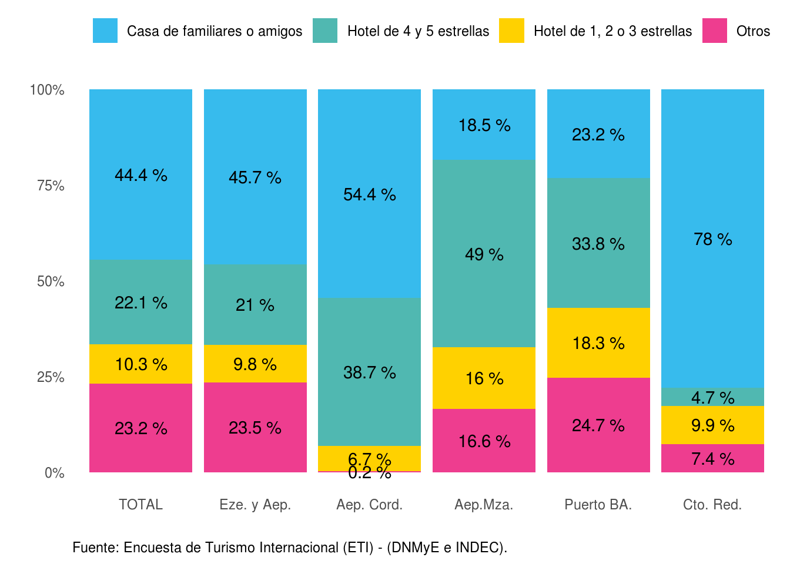El gasto total provino prácticamente en su totalidad de los turistas que no contrataron paquete turístico en la organización de su viaje.
Figura 2.17: Distribución del gasto total en dólares de los turistas no residentes según utilización de paquete turístico, por paso. Año 2021.
A nivel total, la mayor cantidad de pernoctaciones corresponde a turistas que viajaron por “Visita de familiares o amigos” (75,4% del total); esto mismo sucede en todos los pasos relevados.
Figura 2.18: Distribución de los pernoctes no residentes según motivo de viaje, por paso. Año 2021.
La distribución de los pernoctes según principal tipo de alojamiento utilizado arroja que la mayor cantidad de pernoctes fueron de turistas hospedados en “Casa de familiares o amigos” (73,6%).
Figura 2.19: Distribución de los pernoctes no residentes según principal tipo de alojamiento, por paso. Año 2021.

La mayor proporción de las pernoctaciones en nuestro país provino de turistas que no utilizaron paquete turístico en la organización del viaje.
Figura 2.20: Distribución de los pernoctes no residentes según utilización de paquete turístico, por paso. Año 2021.
Al analizar las actividades realizadas en la Argentina, se observa que el 45,6% de los turistas realizaron “actividades gastronómicas,” seguidas por las “actividades en lugares urbanos” y las “actividades nocturnas.”
Figura 2.21: Participación porcentual de las actividades realizadas según lugar de residencia. Total de pasos relevados. Año 2021.
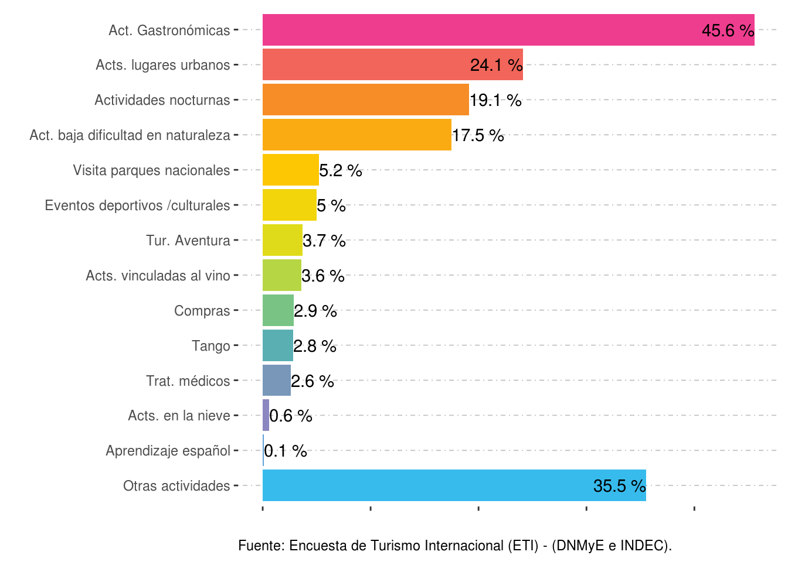En Ezeiza y Aeroparque, las “actividades gastronómicas” se posicionaron en primer lugar dentro de las actividades realizadas (47,3%), seguidas por las “actividades en lugares urbanos” y las “actividades nocturnas.”
Figura 2.22: Participación porcentual de las actividades realizadas según lugar de residencia. Ezeiza y Aeroparque. Año 2021.
Figura 2.23: Participación porcentual de las actividades realizadas según lugar de residencia de los turistas residentes en Bolivia, Brasil y Chile. Ezeiza y Aeroparque. Año 2021.
Figura 2.24: Participación porcentual de las actividades realizadas según lugar de residencia de los turistas residentes en Paraguay, Uruguay y Estados Unidos y Canadá. Ezeiza y Aeroparque. Año 2021.
Figura 2.25: Participación porcentual de las actividades realizadas según lugar de residencia de los turistas residentes en Resto de América, Europa y Resto del Mundo. Ezeiza y Aeroparque. Año 2021.
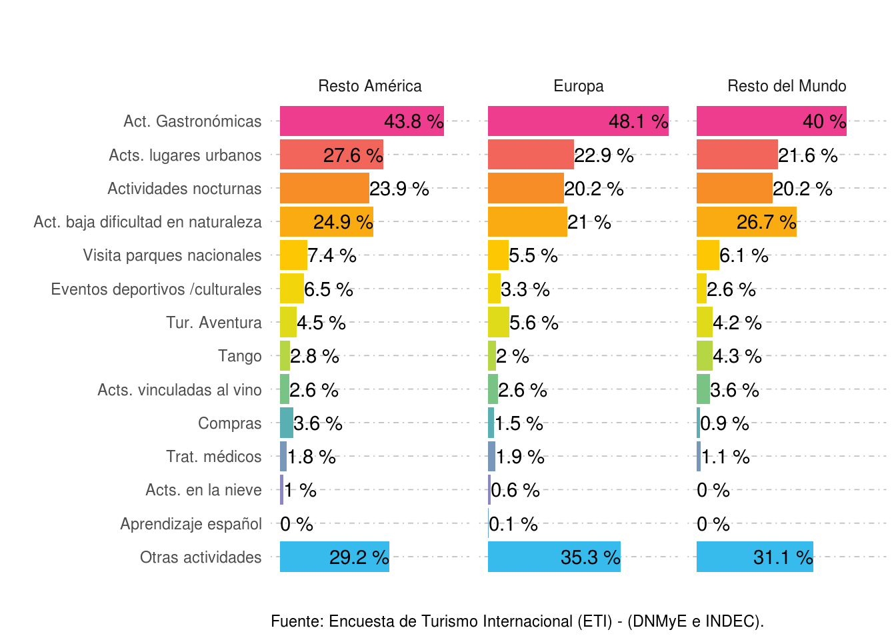Las “actividades en lugares urbanos” se destacaron en el Aeropuerto de Córdoba (72,8%), seguidas por las “actividades nocturnas” y las “asistencia a eventos deportivos o culturales.”
Figura 2.26: Participación porcentual de las actividades realizadas según lugar de residencia.Aeropuerto Internacional de Córdoba. Año 2021.
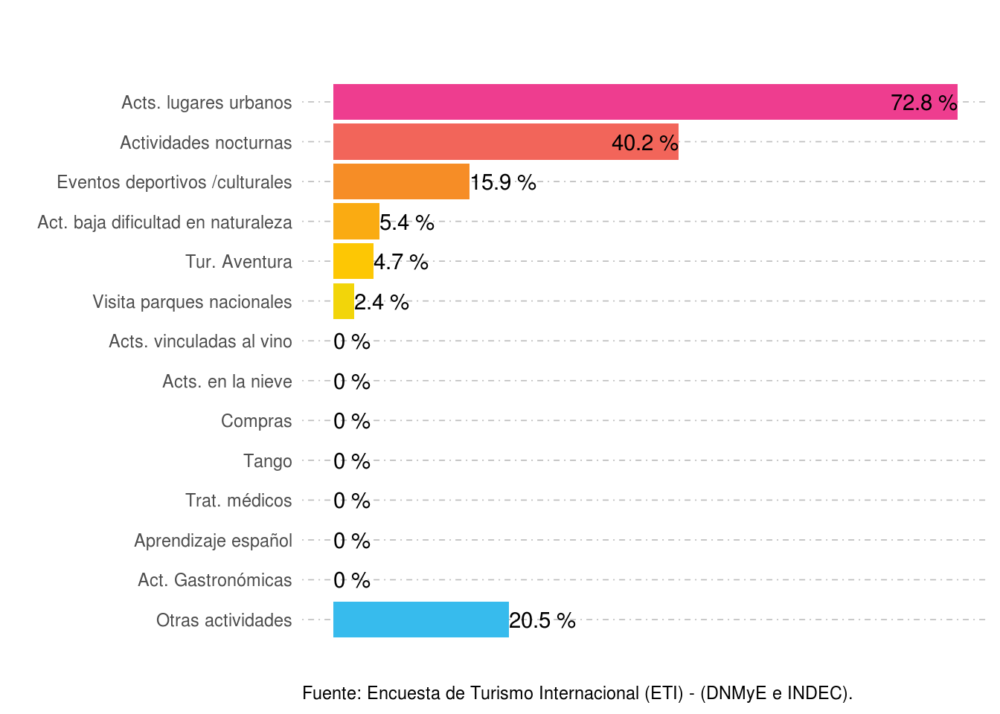Figura 2.27: Participación porcentual de las actividades realizadas según lugar de residencia.Aeropuerto Internacional de Córdoba. Año 2021.
En el Aeropuerto de Mendoza, la mayor cantidad de turistas realizó “actividades vinculadas al vino” (42,2%), le siguieron en importancia las “actividades gastronómicas” y las “actividades de baja dificultad en la naturaleza.”
Figura 2.28: Participación porcentual de las actividades realizadas según lugar de residencia. Aeropuerto Internacional de Mendoza. Año 2021.
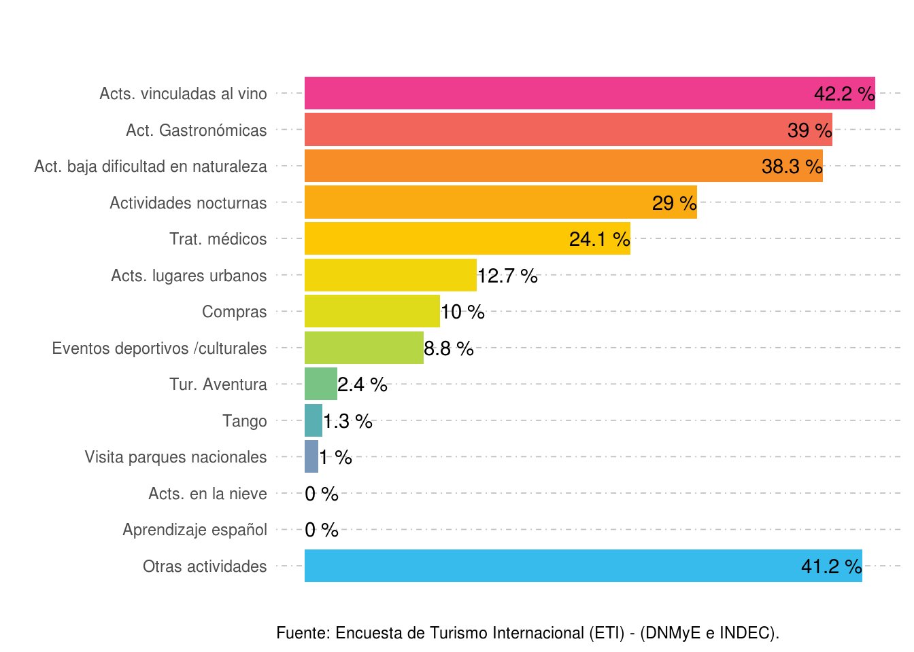Figura 2.29: Participación porcentual de las actividades realizadas según lugar de residencia. Aeropuerto Internacional de Mendoza. Año 2021.
En el Puerto de Buenos Aires, se ubicaron en primer lugar las “actividades gastronómicas” (36,1%), seguidas por las “actividades en lugares urbanos” y las “actividades nocturnas.”
Figura 2.30: Participación porcentual de las actividades realizadas según lugar de residencia.Puerto de Buenos Aires. Año 2021.
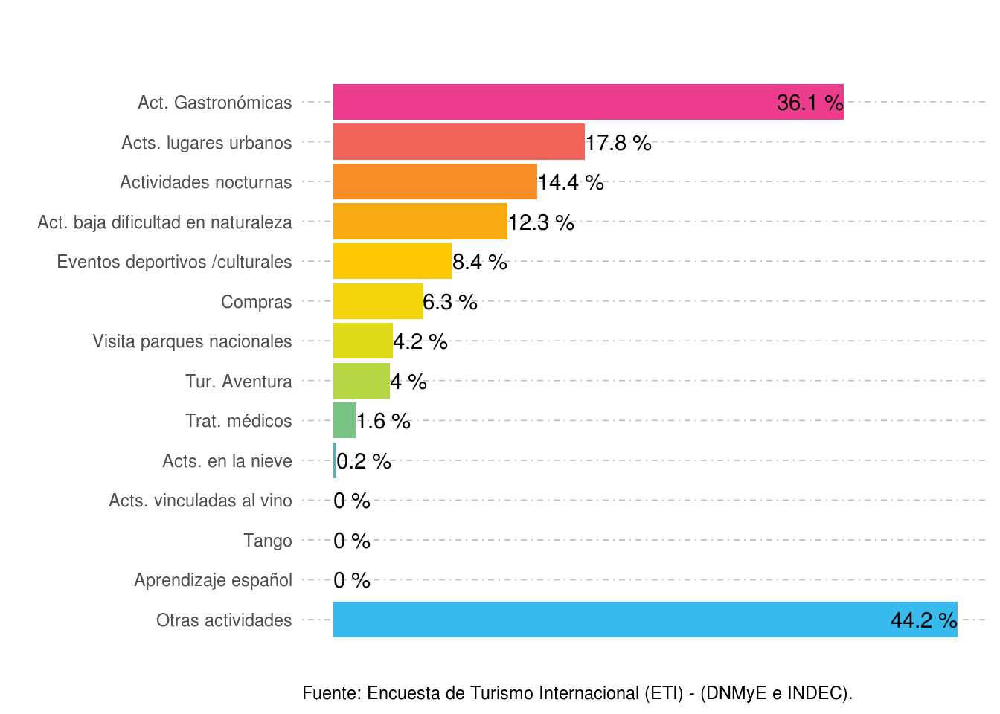Al diferenciar por país de residencia las actividades realizadas por los turistas en el paso Puerto de Buenos Aires, se observa que los residentes en Uruguay realizaron principalmente “actividades gastronómicas”, seguidas por “actividades en lugares urbanos”; mientras que los turistas residentes en el Resto del Mundo, en primer lugar, realizaron “actividades gastronómicas” y “actividades en lugares urbanos,” en segundo lugar.
Figura 2.31: Participación porcentual de las actividades realizadas según lugar de residencia. Puerto de Buenos Aires. Año 2021.
Se destacaron las “actividades gastronómicas” (31,4%) en Cristo Redentor, seguidas por las “actividades en lugares urbanos” y las “actividades de baja dificultad en la naturaleza.”
Figura 2.32: Participación porcentual de las actividades realizadas según lugar de residencia. Paso Internacional Cristo Redentor. Año 2021.
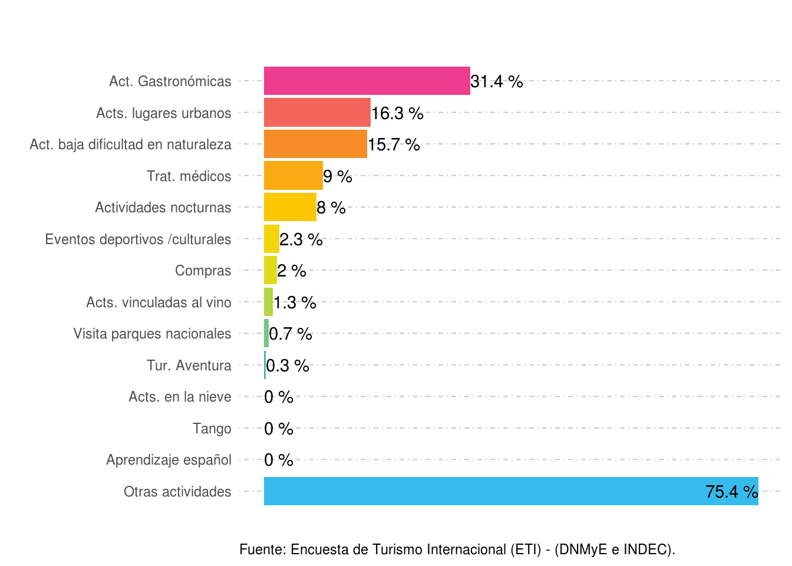Finalmente, al segmentar las actividades realizadas en Cristo Redentor según país de residencia, se destaca que los residentes en Chile, mayormente, realizaron “actividades gastronómicas”, seguidas por “actividades de baja dificultad en la naturaleza”; en tanto que los turistas residentes en el Resto del mundo, realizaron “actividades en lugares urbanos”, en primer lugar y, luego, “actividades gastronómicas.”
Figura 2.33: Participación porcentual de las actividades realizadas según lugar de residencia. Paso Internacional Cristo Redentor. Año 2021.
En la suma de los 6 pasos relevados, observamos que “Estadía en general” fue el rubro mejor valorado por los turistas no residentes (con una calificación promedio de 4,4 -en escala de 1 a 5-); seguida por “Gastronomía” y “Alojamiento”. Cuando se desagrega la información por paso, la “Estadía en general,” sin excepción, se vuelve a posicionar en primer lugar.
Figura 2.34: Calificación promedio (sobre escala de 1 a 5) por paso, según rubro. Año 2021.
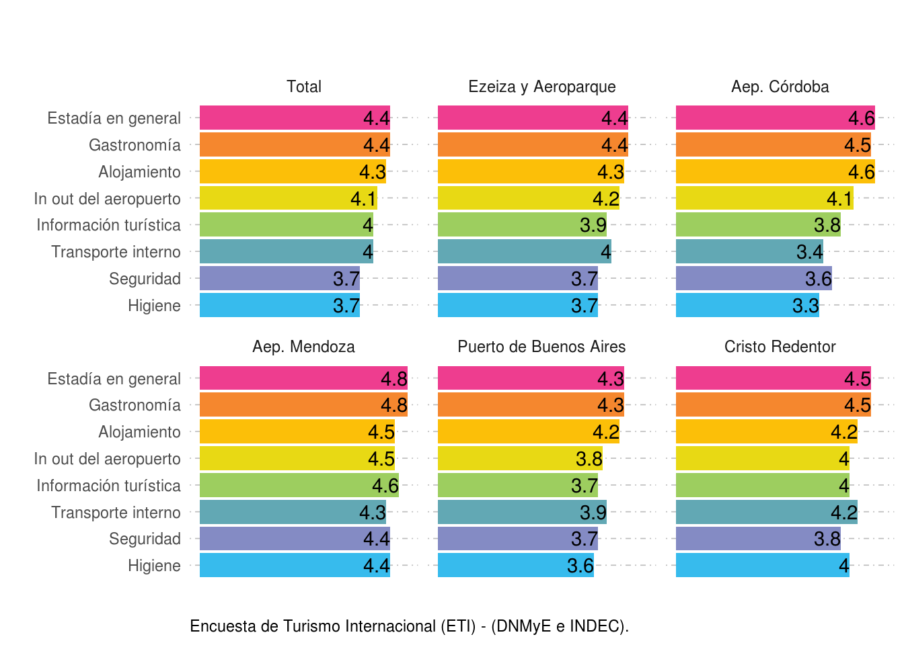El aspecto de mayor influencia para la selección de nuestro país como destino de viaje fue la “presencia de familiares o amigos” (el 26,5% de los turistas mencionó dicho aspecto); mencionando en segundo lugar “los valores culturales” y “la relación precio-calidad del país”.
En Ezeiza y Aeroparque el principal aspecto de influencia fue “presencia de familiares o amigos”; “presencia de familiares o amigos” en el Aeropuerto de Córdoba; “la proximidad con el país de origen” en el Aeropuerto de Mendoza; “presencia de familiares o amigos” en el Puerto de Buenos Aires y “la relación precio-calidad del país” en Cristo Redentor.
Figura 2.35: Peso porcentual de los aspectos que influyeron a la hora de elegir la Argentina. Año 2021.
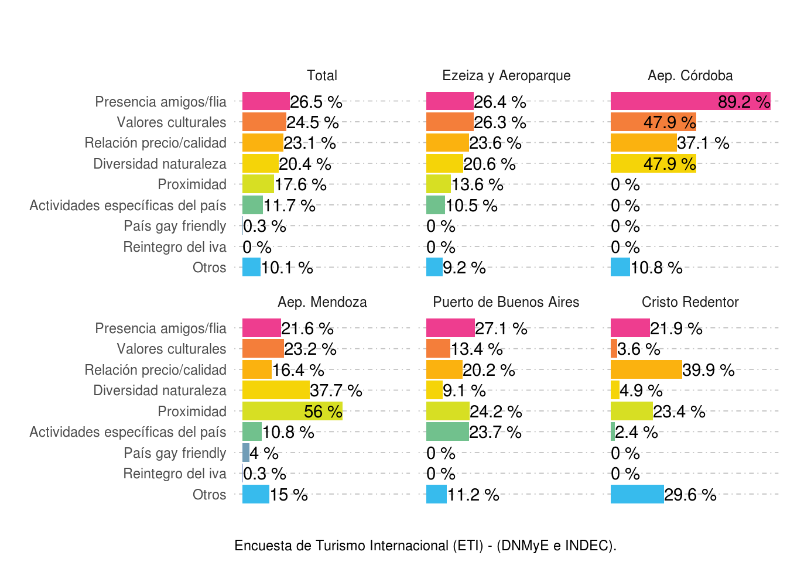En los pasos Ezeiza y Aeroparque el principal destino visitado por los turistas no residentes fue CABA (el 40,6% de las pernoctaciones y el 57,1% de los turistas se registraron en dicho destino).
Figura 2.36: Distribución de los pernoctes y turistas según destinos visitados.Ezeiza y Aeroparque. Año 2021.
En el Puerto de Buenos Aires, CABA fue el principal destino visitado (64,7% de las pernoctaciones y 78,8% de los viajeros).
Figura 2.37: Distribución de los pernoctes y turistas según destinos visitados. Puerto de Buenos Aires. Año 2021.
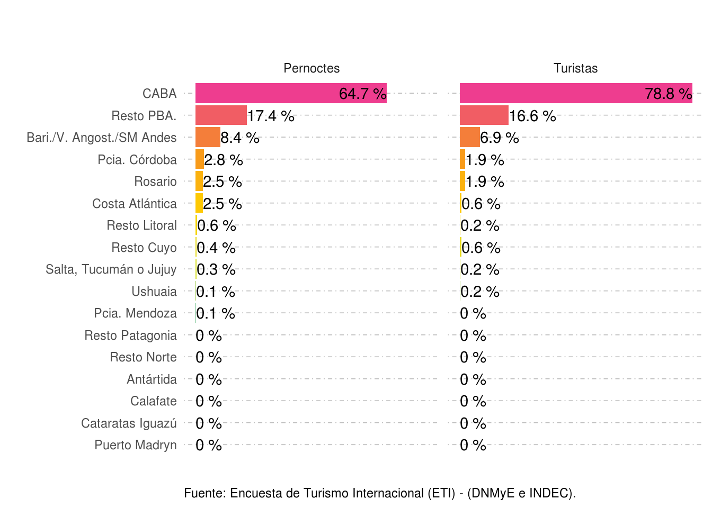En el Aeropuerto de Córdoba, los turistas visitaron en mayor medida Córdoba (ciudad) (83,1% de las pernoctaciones y 85,4% de los viajeros).
Figura 2.38: Distribución de los pernoctes y turistas según destinos visitados. Aeropuerto Internacional de Córdoba. Año 2021.
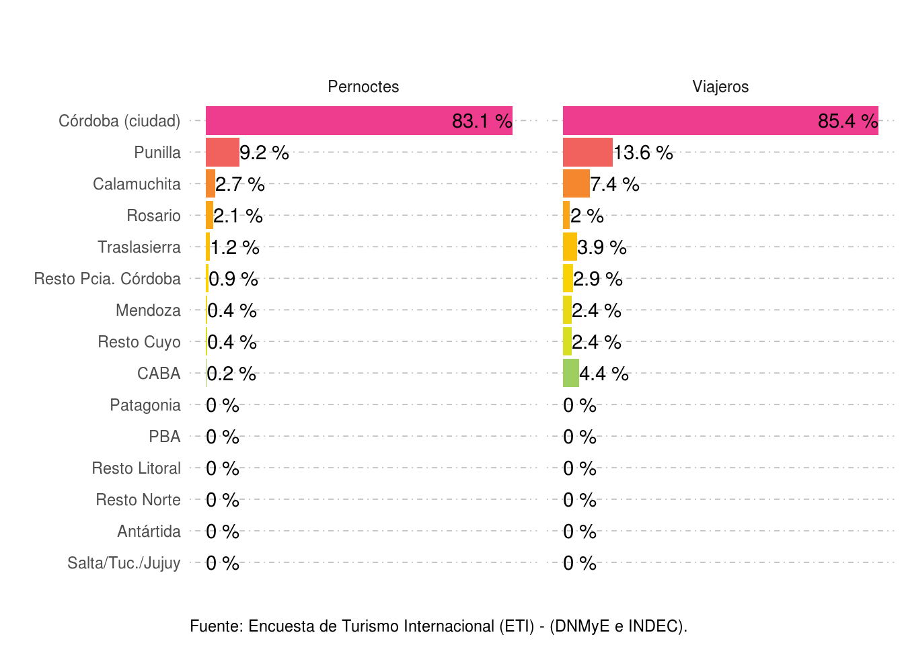En el Aeropuerto de Mendoza, el primer destino seleccionado por los turistas no residentes fue Mendoza (ciudad) (50,4% de los viajeros); sin embargo, la mayor cantidad de pernoctaciones se registró en el resto de la provincia.
Figura 2.39: Distribución de los pernoctes y turistas según destinos visitados. Aeropuerto Internacional de Mendoza. Año 2021.
Por último, en Cristo Redentor, se destacó como primer lugar visitado Mendoza (ciudad) (37,4% de los viajeros); pero, al igual que lo observado en el Aeropuerto de Mendoza, la mayoría de las pernoctaciones se produjo en el resto de la provincia.
Figura 2.40: Distribución de los pernoctes y turistas según destinos visitados. Paso Internacional Cristo Redentor. Año 2021.
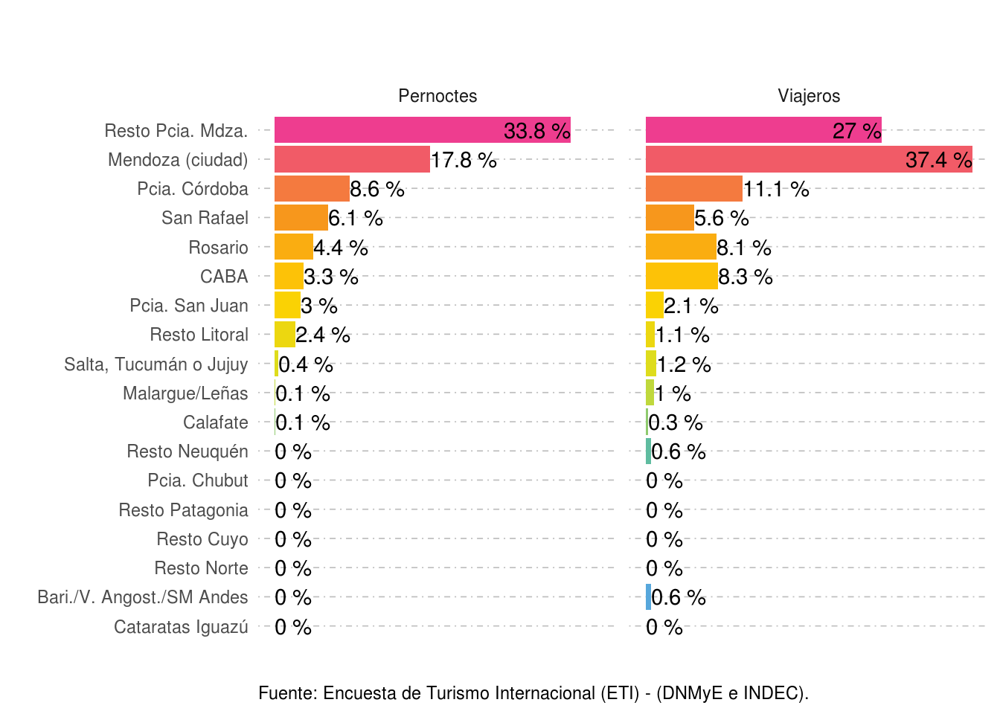2.3.2 Turismo Emisivo
En el siguiente apartado se presentará información referida al turismo EMISIVO en los pasos relevados por la ETI en el año 2021.
En 2021 se contabilizaron 618.152 turistas en Ezeiza y Aeroparque (-17,6% vs 2020); 5.412 en el Aeropuerto de Córdoba (-91,5% i.a.); 6.091 en el Aeropuerto de Mendoza (-73% i.a.); 75.730 en el Puerto de Buenos Aires (-52,6% i.a.) y 4.061 en el Paso Internacional Cristo Redentor (-96,9% i.a.).
| Año | Eze / Aep. | Aep. Córd. | Aep. Mend.* | Puerto CABA | Cto. Redentor | |||||
|---|---|---|---|---|---|---|---|---|---|---|
| Turistas | var % i.a | Turistas | var % i.a | Turistas | var % i.a* | Turistas | var % i.a | Turistas | var % i.a | |
| 2010 | 1.900.833 | /// | 144.101 | /// | /// | /// | /// | /// | /// | /// |
| 2011 | 2.156.625 | 13,5% | 187.382 | 30,0% | /// | /// | /// | /// | /// | /// |
| 2012 | 2.431.953 | 12,8% | 184.144 | −1,7% | /// | /// | /// | /// | /// | /// |
| 2013 | 2.581.537 | 6,2% | 186.243 | 1,1% | /// | /// | /// | /// | /// | /// |
| 2014 | 2.466.612 | −4,5% | 182.663 | −1,9% | /// | /// | 464.769 | /// | /// | /// |
| 2015 | 2.888.939 | 17,1% | 226.600 | 24,1% | /// | /// | 506.631 | 9,0% | /// | /// |
| 2016 | 3.340.573 | 15,6% | 271.991 | 20,0% | /// | /// | 548.344 | 8,2% | /// | /// |
| 2017 | 3.729.739 | 11,6% | 374.494 | 37,7% | /// | /// | 590.611 | 7,7% | /// | /// |
| 2018 | 3.599.935 | −3,5% | 387.245 | 3,4% | 179.963 | 122,4% | 548.902 | −7,1% | 665.228 | /// |
| 2019 | 3.232.794 | −10,2% | 305.068 | −21,2% | 132.767 | −26,2% | 428.076 | −22,0% | 425.790 | −36,0% |
| 2020 | 750.270 | −76,8% | 63.339 | −79,2% | 22.584 | −83,0% | 159.930 | −62,6% | 130.703 | −69,3% |
| 2021 | 618.152 | −17,6% | 5.412 | −91,5% | 6.091 | −73,0% | 75.730 | −52,6% | 4.061 | −96,9% |
| (*) El Aep. Int. de Mendoza comenzó a ser relevado en el 3er trim de 2017, no se incluyen los datos del 2017 ya que no hay datos del año completo. | ||||||||||
| Fuente: Encuesta de Turismo Internacional (ETI) - (DNMyE e INDEC). | ||||||||||
En Ezeiza y Aeroparque, los turistas residentes en la Argentina tuvieron como principal destino EE.UU y Canadá (el 32% del total de los turistas).
| Destino | Turistas | Distribución % |
|---|---|---|
| Total | 413.537 | 100,0% |
| Bolivia | 10.318 | 2,5% |
| Brasil | 46.956 | 11,4% |
| Chile | 24.966 | 6,0% |
| Paraguay | 15.801 | 3,8% |
| Uruguay | 6.137 | 1,5% |
| EE.UU y Canadá | 132.185 | 32,0% |
| Resto América | 107.138 | 25,9% |
| Europa | 62.730 | 15,2% |
| Resto del Mundo | 7.306 | 1,8% |
| Nota: Datos que corresponden al 1er y 4to trim. de 2021, en el resto de los trims. no se realizó el relevamiento. | ||
| Fuente: Encuesta de Turismo Internacional (ETI) - (DNMyE e INDEC). | ||
En el Aeropuerto Internacional de Córdoba, Resto América se destacó como principal destino (45,7% del total).
| Aeropuerto Internacional de Córdoba, 2021. | ||
| Destino | Turistas | Distribución % |
|---|---|---|
| Total | 5.408 | 100,0% |
| Brasil | 0 | 0,0% |
| Chile | 346 | 6,4% |
| EE.UU y Canadá | 497 | 9,2% |
| Caribe | 1.920 | 35,5% |
| Resto América | 2.470 | 45,7% |
| Europa y resto del mundo | 175 | 3,2% |
| Nota: Datos que corresponden al 4to trim. de 2021, en el resto de los trims. no se realizó el relevamiento. | ||
| Fuente: Encuesta de Turismo Internacional (ETI) - (DNMyE e INDEC). | ||
En el Puerto de Buenos Aires, la mayor cantidad de residentes tuvieron destino en Uruguay (93,1% del total).
| Destino | Turistas | Distribución % |
|---|---|---|
| Total | 44.451 | 100,0% |
| Uruguay | 41.370 | 93,1% |
| Resto del mundo | 3.081 | 6,9% |
| Nota: Datos que corresponden al 4to trim. de 2021, en el resto de los trims. no se realizó el relevamiento. | ||
| Fuente: Encuesta de Turismo Internacional (ETI) - (DNMyE e INDEC). | ||
En el caso del Aeropuerto Internacional de Mendoza, fue Chile el principal destino (52,3% del total).
| Destino | Turistas | Distribución % |
|---|---|---|
| Total | 6.036 | 100,0% |
| Brasil | 229 | 3,8% |
| Chile | 3.159 | 52,3% |
| México y Caribe | 919 | 15,2% |
| EE.UU y Canadá | 1.049 | 17,4% |
| Resto América | 525 | 8,7% |
| Europa y resto del mundo | 155 | 2,6% |
| Nota: Datos que corresponden al 4to trim. de 2021, en el resto de los trim no se realizó el relevamiento. | ||
| Fuente: Encuesta de Turismo Internacional (ETI) - (DNMyE e INDEC). | ||
Finalmente, en el paso Internacional Cristo Redentor, Chile se ubicó en primer lugar (97,8% de las visitas de residentes en el país).
| Destino | Turistas | Distribución % |
|---|---|---|
| Total | 2.805 | 100,0% |
| Chile | 2.743 | 97,8% |
| Resto del mundo | 62 | 2,2% |
| Nota: Datos que corresponden al 4to trim. de 2021, en el resto de los trims. no se realizó el relevamiento. | ||
| Fuente: Encuesta de Turismo Internacional (ETI) - (DNMyE e INDEC). | ||
En la totalidad de los pasos relevados por la ETI, se destacó como primer motivo de viaje “Vacaciones/ocio/recreación” (el 44,4% del total).
Dicho motivo se repitió como el de mayor relevancia en Ezeiza y Aeroparque, el Aeropuerto de Córdoba y Mendoza, no así en Puerto de Buenos Aires y en Cristo Redentor, donde el principal motivo de viaje fue “Visita a Familiares o Amigos”.
Figura 2.41: Distribución de los turistas residentes según motivo de viaje, por paso. Año 2021.
Sin diferenciar la información por paso, el principal tipo de alojamiento utilizado por los turistas residentes en el país fue “casa de familiares o amigos” (el 37,7% del total de turistas utilizó este tipo de alojamiento); mismo tipo de alojamiento se destacó en el resto de los pasos relevados, menos en Córdoba, donde se posicionaron los establecimientos de 4 y 5 estrellas en primer lugar.
Figura 2.42: Distribución de los turistas residentes según principal tipo de alojamiento, por paso. Año 2021.
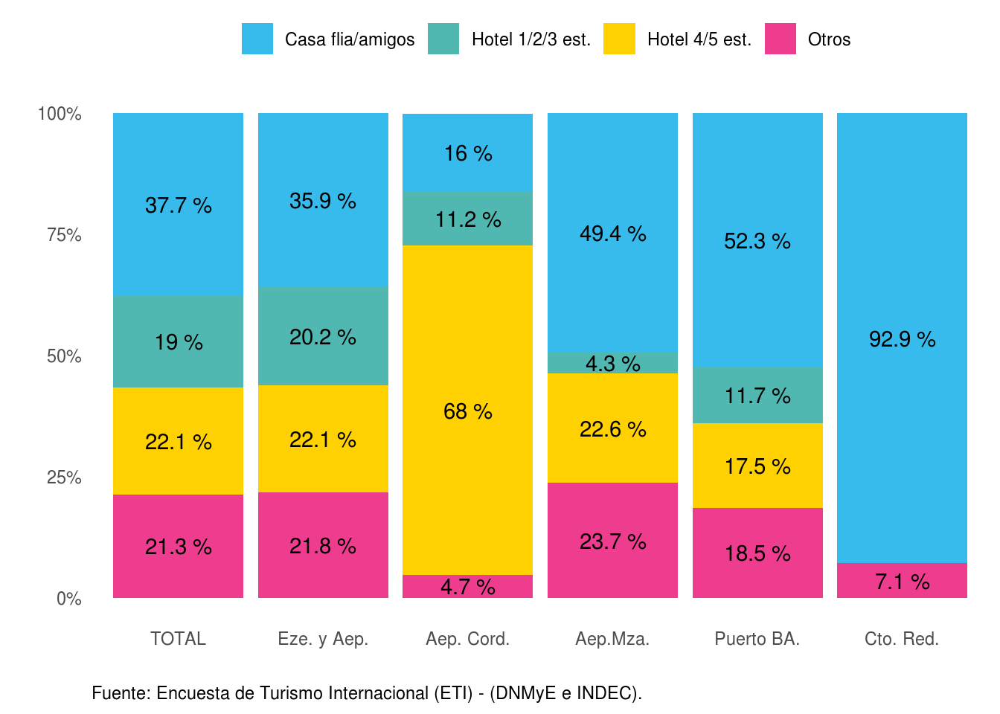En el único paso en donde se destacó la utilización de paquete turístico fue en Aeropuerto de Córdoba.
Figura 2.43: Distribución de los turistas residentes según organización del viaje, por paso. Año 2021.
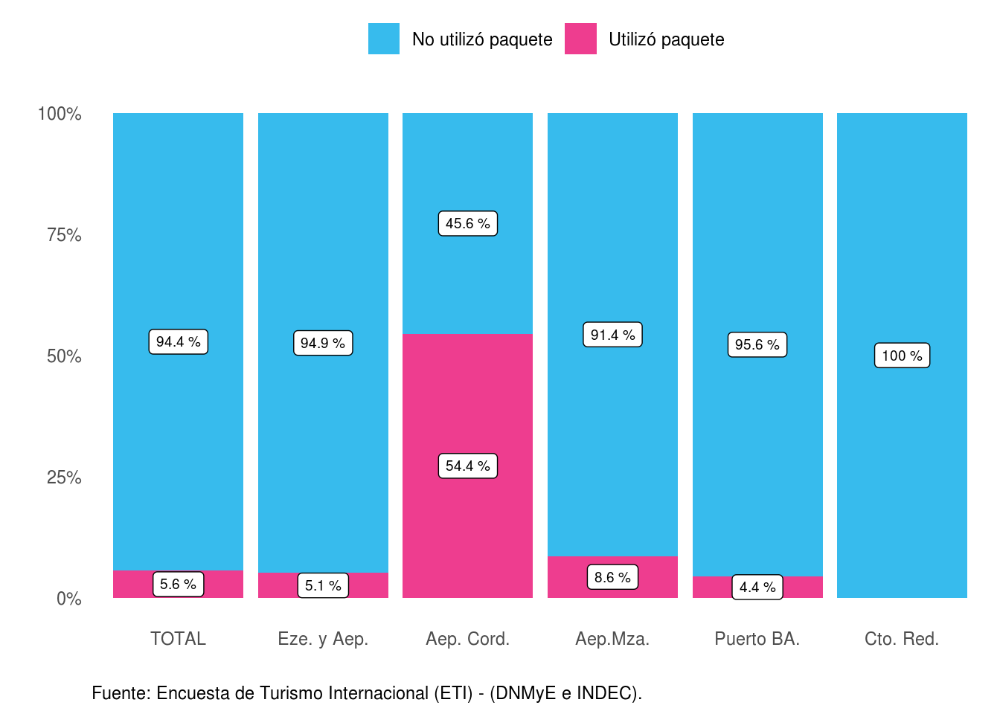En el 2021, en la Totalidad de los pasos relevados, el gasto de los turistas residentes que viajaron al exterior sumó 790,6 millones de US$ (los gastos surgen de la suma del gasto de los trimestres 1 y 4 en Ezeiza y Aeroparque y el trimestre 4 en el resto de los pasos).
El gasto total en dólares de los turistas residentes en Ezeiza y Aeroparque ascendió a 724,8 millones; 8,3 mill. en el Aeropuerto de Córdoba; 48,9 mill. en el Puerto de Buenos Aires; 7,2 mill. en el Aeropuerto de Mendoza; y, finalmente 1,3 mill. en Cristo Redentor.
El gasto en US$ por turista residente fue de 1.674,1. Se observa que, al desagregar la información por paso, el mayor gasto por turista fue en Ezeiza y Aeroparque (1.752,6 US$); seguido por el Aep. Córdoba (1.540 US$); Aep. Mendoza (1.195,6 US$); el Puerto de Buenos Aires (1.101 US$); y Cristo Redentor (465,1 US$).
El gasto promedio diario en US$, fue de 58,7 en la totalidad de los pasos; 132 US$ en el Aep. Córdoba; seguido por Ezeiza y Aeroparque (58,9 US$); Puerto de Buenos Aires (57,3 US$); Aep. Mendoza (44,6 US$); y Cristo Redentor (17,5 US$).
| Paso | Turistas | Pernoctaciones | Gasto total | Estadía promedio (en noches) | Gasto por turista (en US$) | Gasto promedio diario (en US$) |
|---|---|---|---|---|---|---|
| TOTAL | 472.237 | 13.461.231 | 790.557.656 | 28,5 | 1.674,1 | 58,7 |
| Ezeiza y Aeroparque | 413.537 | 12.307.519 | 724.769.869 | 29,8 | 1.752,6 | 58,9 |
| Aep. Córdoba | 5.408 | 63.094 | 8.328.217 | 11,7 | 1.540,0 | 132,0 |
| Puerto de Buenos Aires | 44.451 | 854.297 | 48.938.344 | 19,2 | 1.101,0 | 57,3 |
| Aep. Mendoza | 6.036 | 161.905 | 7.216.520 | 26,8 | 1.195,6 | 44,6 |
| Cristo Redentor | 2.805 | 74.416 | 1.304.706 | 26,5 | 465,1 | 17,5 |
| Nota: En el año 2021 se relevaron el trim 1 y 4 en Ezeiza y Aeroparque; y el trim 4 en el resto de los pasos. | ||||||
| Fuente: Encuesta de Turismo Internacional (ETI) - (DNMyE e INDEC). | ||||||
A nivel general, aportaron más al gasto total los turistas residentes que tuvieron como principal motivo de viaje “Vacaciones/ocio/recreación” (37,2% del total).
En cada uno de los pasos relevados los turistas que viajaron por “Vacaciones/ocio/recreación” volvieron a generar la mayor parte del gasto, con la excepción del Puerto de Buenos Aires, donde la mayoría del gasto provino de los turistas que viajaron por negocios.
Figura 2.44: Distribución del gasto total en dólares de turistas residentes según motivo de viaje, por paso. Año 2021.
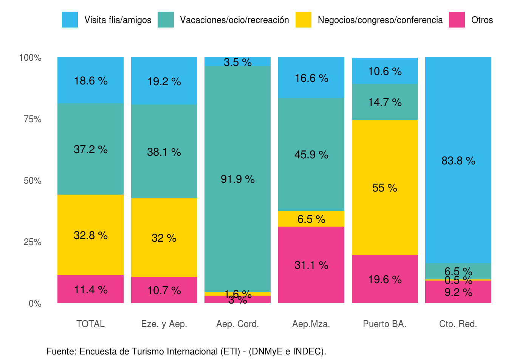En la agrupación de los pasos, la mayor proporción de gasto estuvo generado por los turistas hospedados en la categoría “Otros” (39,2% del gasto total).
En Ezeiza y Aeroparque, los turistas residentes que se alojaron en la categoría “Otros” participaron en el 38,5% del gasto; en el Aeropuerto de Mendoza y en Puerto de Buenos Aires la mayor proporción del gasto también se concentró en “Otros” (36,4% y 57,1% del total, respectivamente); mientras que en el Aeropuerto de Córdoba el mayor aporte provino de los turistas alojados en “Hotel 4 y 5 estrellas” (86% del total); en tanto que Cristo Redentor la mayor parte del gasto provino de los turistas que se alojaron en “Casa flia./amigos” (95,4% del total).
Figura 2.45: Distribución del gasto total en dólares de los turistas residentes según principal tipo de alojamiento, por paso. Año 2021.
Tanto a nivel total como en la mayoría de los pasos, la mayor proporción del gasto provino de turistas residentes que no contrataron paquete turístico en la organización de su viaje al exterior (95,3% del gasto total en la suma de los pasos); la excepción se da en el Aeropuerto de Córdoba, paso en el que los que contrataron paquete realizaron el 79,8% del gasto total en US$.
Figura 2.46: Distribución del gasto total en dólares de los turistas no residentes según utilización de paquete turístico, por paso. Año 2021.
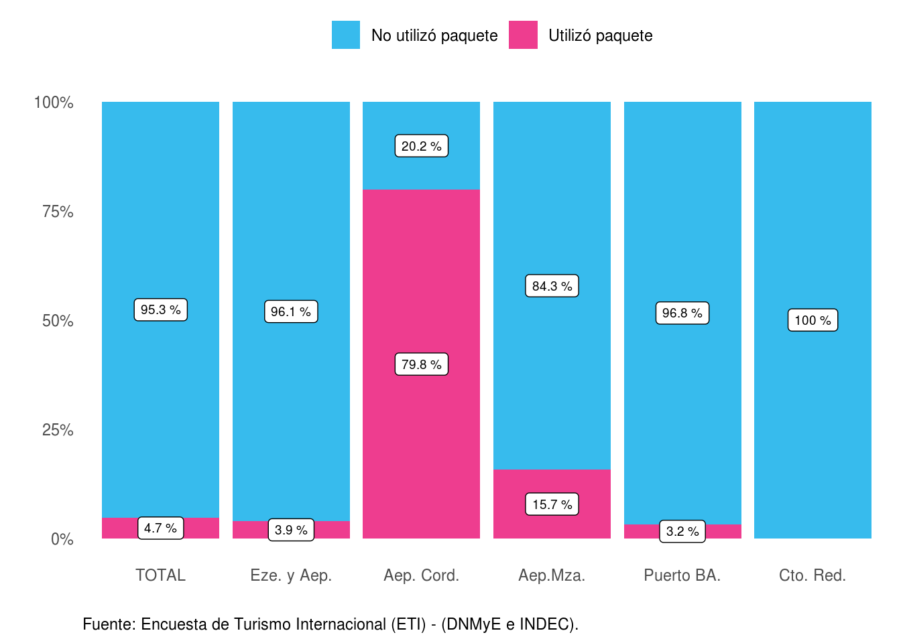Al analizar la distribución de las pernoctaciones según perfil de los turistas, se observa, en primer lugar, como en la suma de todos los pasos la mayoría de las pernoctaciones provinieron de los turista que viajaron al exterior con motivo de “Visita flia/amigos” (40,3% de las pernoctaciones).
Cuando se diferencia por paso, el panorama es variopinto: en Ezeiza y Aeroparque, los turistas que viajaron por “Visita flia/amigos” realizaron el mayor aporte de pernoctaciones (41%); en el Aeropuerto de Córdoba fueron las pernoctaciones de turistas que viajaron con motivo “Vacaciones/ocio/recreación” las que lideraron el ranking (71,8% del total); “Visita flia/amigos” en el Aeropuerto de Mendoza (37,7% del total); “Negocios/congreso/conferencia” en el Puerto de Buenos Aires (37,4% del total); y “Visita flia/amigos” en Cristo Redentor (77,1% del total), finalmente.
Figura 2.47: Distribución de los pernoctes residentes según motivo de viaje, por paso. Año 2021.
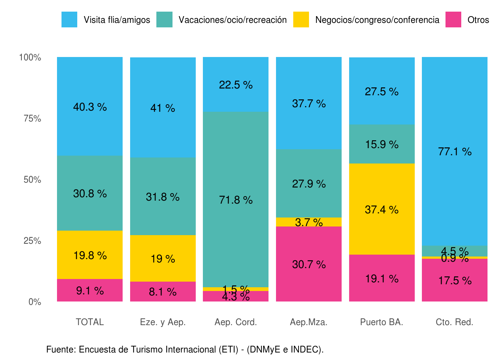La distribución de los pernoctes de los turistas residentes que viajaron al exterior según principal tipo de alojamiento utilizado, evidencia que a nivel general la mayor cantidad de pernoctes fueron de turistas hospedados en “Casa flia./amigos” (50%).
La diferenciación por paso arroja que la misma preponderancia de “Casa de familiares o amigos” sobre el total de pernoctaciones; con la excepción del Aeropuerto de Córdoba, paso en el que la mayoría de las pernoctaciones proviene de turistas alojados en hoteles de 4 y 5 estrellas; y Puerto de Buenos Aires, donde “Casa de familiares o amigos” comparte participación con “Otros alojamientos.”
Figura 2.48: Distribución de los pernoctes residentes según principal tipo de alojamiento, por paso. Año 2021.
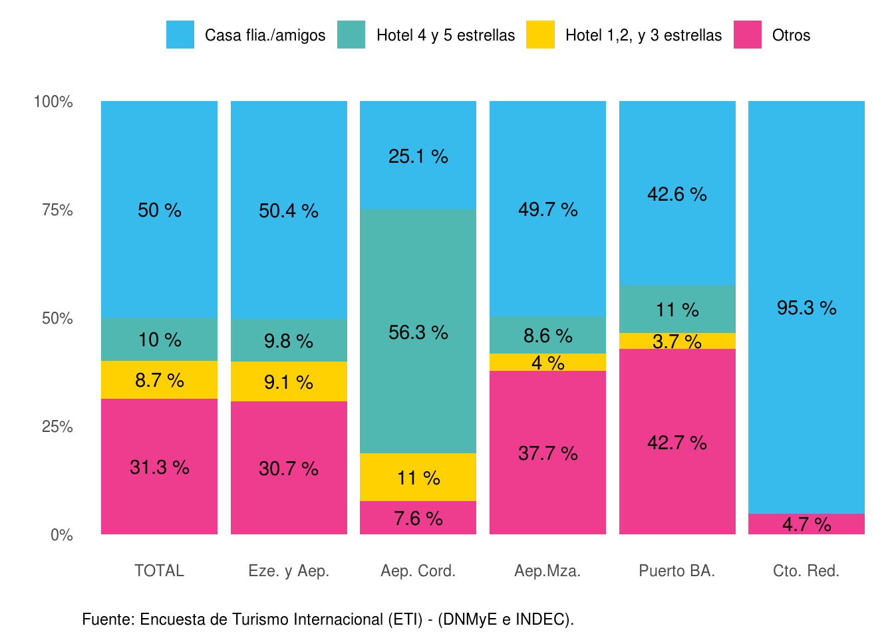Tanto a nivel total como en la mayoría de los pasos, sobre el total de las pernoctaciones, fue marginal el aporte de los turistas que contrataron paquete turístico para organizar su viaje al exterior; aunque en el Aeropuerto de Córdoba más de 4 de cada 10 pernoctaciones fueron de turistas que sí utilizaron paquete.
Figura 2.49: Distribución de los pernoctes residentes según utilización de paquete turístico, por paso. Año 2021.
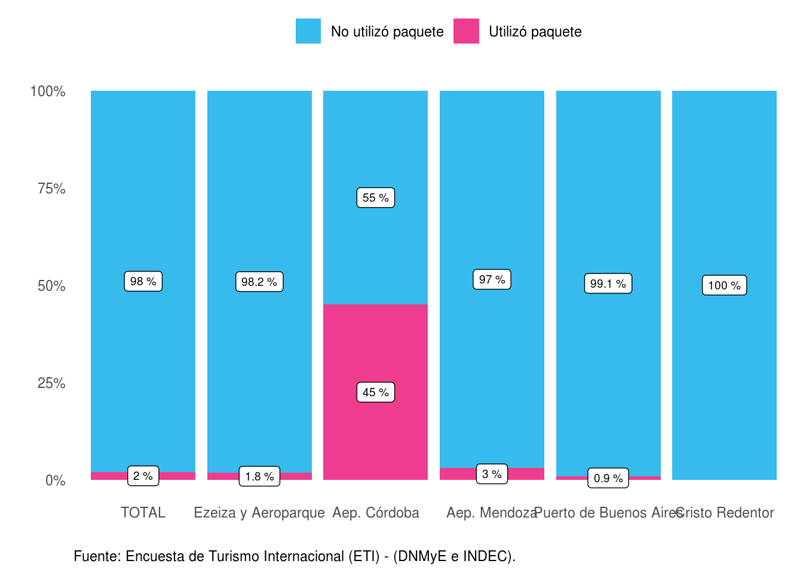2.4 Recursos disponibles
Los datos que se muestran en este capítulo forman parte del Sistema de Información Turística de la Argentina (SINTA) https://www.yvera.tur.ar/sinta/ de la Dirección Nacional de Mercados y Estadística (DNMyE). Los mismos se presentan a través de distintos formatos:
Informes: Publicación mensual del turismo internacional -receptivo y emisivo- de la totalidad de los pasos fronterizos del país: viajes de turistas no residentes que visitaron el país y de turistas residentes que viajaron al exterior. La información estadística está basada en los registros migratorios provistos por la Dirección Nacional de Migraciones (DNM) y en la Encuesta de Turismo Internacional (ETI).
Reportes: Reporte de los últimos datos de Turismo Internacional.
Tableros: Tablero con información del turismo internacional -receptivo y emisivo- de la totalidad de los pasos fronterizos del país y del perfil del turismo receptivo que egresó por los pasos Ezeiza y Aeroparque con datos de la ETI.
Datos Abiertos de turismo internacional por la totalidad de pasos fronterizos: Incluye un conjunto de datasets y recursos disponibles en diferentes niveles de desagregación y en variados formatos en caso de que se necesite un reprocesamiento de los mismos.
Datos Abiertos de la ETI: Incluye un conjunto de datasets y recursos disponibles en diferentes niveles de desagregación y en variados formatos en caso de que se necesite un reprocesamiento de los mismos.
Asimismo, se puede consultar la Web de la ETI
El viaje realizado por un visitante no residente (turismo receptivo) se registra desde el momento que llega a la Argentina hasta que sale. Un visitante no residente (turista o excursionista) puede salir de Argentina para efectuar visitas a otros países y volver a ingresar en un corto período de tiempo, antes de regresar a su país de residencia habitual. Por ello, la cantidad de viajes receptivos puede ser mayor que la cantidad de turistas/excursionistas receptivos. En tanto, el viaje realizado por un visitante residente en Argentina (turismo emisivo) se registra desde el momento en que sale del país hasta que retorna, independientemente de la cantidad de países visitados. Por ello, la cantidad de viajes emisivos coincide con la cantidad de visitantes emisivos. El primer apartado presenta los datos de viajes de turistas/excursionistas, pero no de turistas/excursionistas. En el segundo apartado la unidad de análisis sí serán los turistas.↩︎
Tanto en 2013 como en 2016 dicho organismo realizó mejoras en las estimaciones de los datos, gracias a un conjunto de revisiones metodológicas y a una mayor explotación de los datos migratorios. Para poder tener una serie comparable, desde la DNMyE se realizó un empalme de la serie a partir de las variaciones trimestrales por medio de transporte y país de la serie anterior.↩︎
Se encuentra en proceso de reevaluación, en conjunto con el INDEC, el cálculo de una mejor estimación de turistas en el segundo trimestre de 2020.↩︎
En este apartado se pretende realizar un análisis de los ingresos del turismo receptivo en tanto generador de divisas en el país. No se realiza un análisis del consumo real de bienes y servicios de turismo receptivo, el cual requeriría una estimación del gasto medido en moneda local a precios constantes. Este último enfoque excede el alcance del presente capítulo.↩︎
Abarca los servicios relacionados con el transporte internacional (aéreo, marítimo y terrestre) de no residentes por medios de transporte residentes. Además de los pasajes, se incluyen los cargos por exceso de equipaje, vehículos u otros efectos personales que trae el pasajero y los gastos en alimentos, bebidas u otros incurridos a bordo de los medios de transporte.↩︎